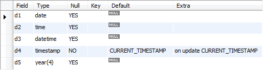
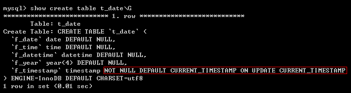
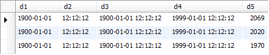
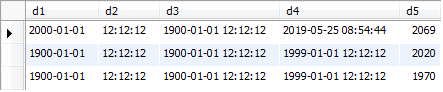
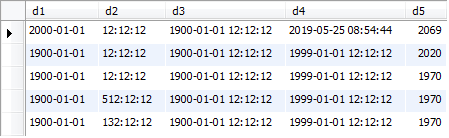
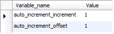
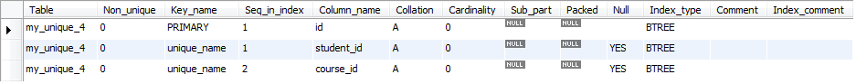
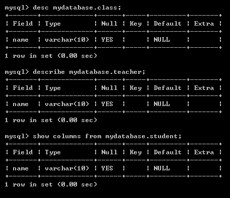
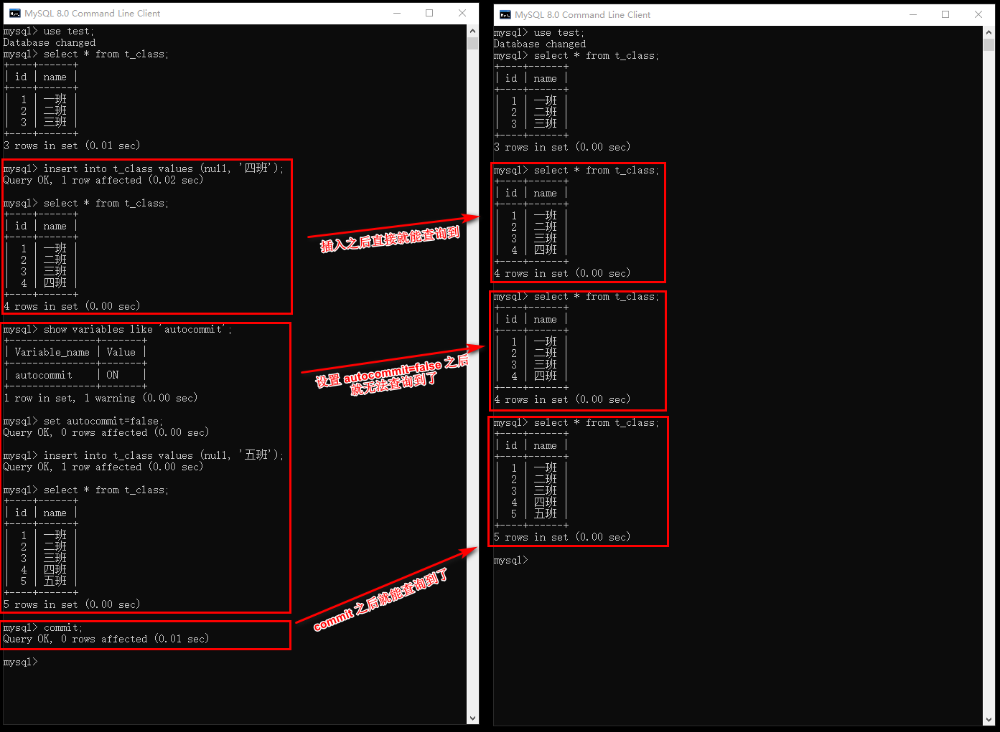

MySQL一、概述（一）数据库分类（二）关系型数据库（三）SQL（四）MySQL1. 开启和关闭服务2. 登录和退出 MySQL3. MySQL 服务端层次4. 编解码5. 列类型5.1 整数类型5.2 浮点类型5.3 时间日期类型5.4 字符串类型6. 列属性6.1 NULL6.2 DEFAULT6.3 COMMENT6.4 PRIMARY KEY6.5 AUTO_INCREMENT6.6 UNIQUE KEY7. 表关系7.1 一对一7.2 一对多7.3 多对多8. 其他二、操作（一）数据库操作1. 创建2. 查看3. 选择4. 修改5. 删除（二）数据表1. 创建2. 查看3. 修改4. 删除（三）数据1. 插入2. 查询3. 删除4. 修改三、高级操作（一）新增数据1. 多数据插入2. 主键冲突2.1 主键冲突更新2.2 主键冲突替换3. 蠕虫复制（二）更新数据（三）删除数据（四）高级查询1. select 选项2. 字段列表3. 数据源3.1 单表3.2 多表3.3 动态数据4. where 条件5. group by 条件5.1 分组统计5.2 多分组5.3 分组排序5.4 回溯统计6. having 条件7. order by 排序8. limit 限制8.1 记录数限制8.2 分页（五）联合查询（六）连接查询1. 交叉连接2. 内连接3. 外连接4. using（七）子查询（八）数据备份与还原（九）用户1. 增加2. 删除3. 修改（十）权限1. 授予2. 取消3. 刷新（十一）找回密码（十二）外键1. 外键要求2. 外键约束3. 增加操作4. 删除操作5. 示例（十三）视图1. 创建视图2. 使用视图3. 修改视图4. 删除视图（十四）事务安全1. 自动事务（auto commit）2. 手动事务2.1 回滚点 （十五）变量1. 系统变量2. 会话变量3. 局部变量4. 作用域（十六）流程结构1. if2. while（十七）函数1. 内置函数1.1 字符串函数1.2 时间函数1.3 数学函数1.4 其他函数2. 自定义函数2.1 创建函数2.2 查看函数2.3 调用函数2.4 删除函数2.5 流程结构与函数（十八）存储过程1. 创建2. 查看3. 调用4. 删除5. 参数（十九）触发器1. 查看触发器2. 触发触发器3. 删除触发器四、运算符（一）算数运算（二）比较运算符（三）逻辑运算符（四）in（五）is（六）like五、工作学习（一）（二）MySQL8.0 连接注意事项（三）MySQL 导入数据要注意的事项（四）/*! 语句 */
MySQL
一、概述
（一）数据库分类
数据库分类：网络数据库、层级数据库、关系数据库。
数据库的另外一种区分方式是基于存储介质进行区分。存储介质分为两种：磁盘、内存。
- 存储在磁盘中：关系型数据库
- 存储在内存中：非关系型数据库
（二）关系型数据库
关系数据库是建立在关系模型基础上的数据库，借助于集合、代数等数学概念和方法来处理数据库中的数据。
关系模型由关系数据结构、关系操作集合、关系完整性约束三部分组成：
关系数据结构：指的是数据以何种方式存储，是一种二维表的形式存储。
关系操作集合：如何来关联和管理对应的存储数据，在这里就是指的 SQL 指令。
关系完整性约束：数据内部有对应的关联关系，以及数据与数据之间也有对应的关联关系。
- 表内约束：对应的具体列只能存放对应的数据（不能乱放）。
- 表间约束：自然界各实体都是有着对应的关联关系的（规定其他表，例如外键）。
典型关系型数据库：
- 小型：Microsoft Access、SQLite
- 中型：SQL Server、MySQL（隶属于 Oracle）
- 大型：Oracle、DB2
（三）SQL
SQL 是一种具有特殊目的的编程语言，用于数据库查询和程序设计，专门为关系型数据库而设计出来。
SQL 分类：
数据查询语言（DQL: Data Query Language）：专门用于查询数据。
- 包括：SELECT、SHOW
- 其他：WHERE、ORDER BY、GROUP BY、HAVING、USING
数据操作语言（DML: Data Manipulation Language）：专门用于数据管理。
- 包括：INSERT、DELETE、UPDATE
数据定义语言（DDL）：专门用于结构管理。
- 包括：CREATE、DROP、ALTER
数据控制语言（DCL）：专门用于权限管理，包括给予权限和收回权限。
- 包括：GRANT 或 REVOKE
事务处理语言（TPL）：专门用于事务安全处理，并不是所有关系型数据库都提供事务安全处理。MySQL 支持。
- 包括：BEGIN、TRANSACTION、COMMIT、ROLLBACK
（四）MySQL
1. 开启和关闭服务
- 开启 MySQL 服务：net start mysql
- 关闭 MySQL 服务：net stop mysql
2. 登录和退出 MySQL
登录：mysql -h localhost -P 3306 -u root -p
- 连接本地最简单的语句：mysql -u root -p
- 连接本地 MySQL 服务器就是 localhost，还可以连接远程 MySQL 服务器，那么就需要知道远程 MySQL 服务器 IP 地址或者主机名。
- 如果 MySQL 服务器默认端口没有改变的话，-P 3306 可以不写。
退出：exit、quit、\q。
3. MySQL 服务端层次
- 数据库管理系统（DBMS）：专门管理服务器端的所有内容，其实就是数据库。
- 数据库（DB）：专门用于存储数据的仓库，仓库可以有很多个。
- 二维数据表（Table）：专门用于存储具体的实体数据。
- 字段（Field）：具体存储某种类型的数据（实际存储单元）。
4. 编解码
语法：
- set names 字符集;
- show variables like 'character_set%';
- set 变量名=值;
set names 字符集 是 mysql.exe 告知 mysqld.exe 自己所使用的字符集，如果要设置 UTF-8 的话：set names utf8。
show variables like 'character_set%' 是查看当前所有层已经设置的字符集。
set 变量名=值 是设置指定层字符集。
| Variable_name | Value | 说明 |
|---|---|---|
| character_set_client | utf8mb4 | 客户端传入数据的编码 |
| character_set_connection | utf8mb4 | 连接使用的编码 |
| character_set_database | utf8mb4 | 数据库使用编码 |
| character_set_filesystem | binary | 存储在文件系统的编码 |
| character_set_results | utf8mb4 | 返回的结果使用的编码 |
| character_set_server | utf8mb4 | 服务器使用 的编码 |
| character_set_system | utf8 | DBMS 使用的编码 |
mysql.exe 与 mysqld.exe 之间的处理关系一共分三层：
- 客户端传输数据到服务器：client：character_set_client
- 服务器返回数据给客户端：server：character_set_results
- 客户端与服务器之间的连接：connection：character_set_connection
set names 字符集的本质就是一次性打通三层关系的字符集，使他们变得一致。
5. 列类型
5.1 整数类型
- tinyint：采用一个字节来保存整型，范围-128~127
- smallint：采用两个字节来保存整型，范围-32768~32767
- mediumint：采用三个字节来保存整型。
- int：采用四个字节来保存整型，范围-2147483648~2147483647
- bigint：采用八个字节来保存整型。
通常使用最多的是 tinyint 和 int。
可以通过在类型之后加一个 unsigned 来使用无符号类型。
alter table my_int add int_6 tinyint unsigned;tinyint 使用 desc 查看显示 tinyint(4)，而 tinyint unsigned 使用 desc 查看显示 tinyint(3)，个人感觉这就像是在说数字的长度。tinyint 范围-127~128，最长长度为4，tinyint unsiged 因为没有符号，范围0~255，最长只能是255，也就是长度3。smallint desc 显示 smallint(6)，因为最长是其负数-32768，长度为6。
在显示的时候是没有达到这个长度的，如果想要显示出来，可以给字段增加一个 zerofill 属性。
x
alter table my_int add int_7 tinyint unsigned zerofill;alter table my_int add int_8 tinyint zerofill;-- 上面两句其实是一样的-- 需要注意的是，有 zerofill 就一定会有 unsigned，无论是否手动指定-- 为什么呢？因为 zerofill 会在左侧开始填充0，所以负数不能使用。所以，一旦使用 zerofill 则默认 unsigned其实还可以手动指定显示的长度。
x
alter table my_int add int_9 tinyint(2) zerofill;-- 如果数字长度不足2，则补0，如果长度大于等于2，则无变化-- 在存入诸如时间、日期等数据的时候可以指定长度5.2 浮点类型
在 MySQL 中将小数类型分为两类：
浮点型：又称之为精度类型，是一种有可能丢失精度的数据类型，数据有可能不那么准确。
- float：单精度类型，系统提供四个字节来存储数据，精度7位。
- double：双精度类型，系统提供八个字节来存储数据，精度15位。
定点型：能够保证数据整数部分精确的小数，小数部分可能不精确，超出长度会四舍五入。
- decimal
浮点数以 float 举例，double 同：
float：表示不指定小数位的浮点数。
float(M, D)：表示一共存储 M 个有效数字，其中小数部分占 D 位。
- float(10, 2)：整数部分占8位，小数部分占2位。
float(10, 2)：如果数据精度丢失，那么是按照四舍五入方式进行取舍的。
- 如果插入12345678.90的话，得到12345679.00。这里也可以知道，精度为7位，因为第8位就不一致了。
- 如果插入99999999.99的话，得到100000000.00。
float(10, 2)：浮点数可以采用科学计数法存储数据。
- 例如10e5，表示的就是1000000.00。
浮点数通常用于保存一些数量特别大，大到可以不用那么精确的数据。
定点型 decimal ，系统会自动根据存储的数据来分配空间，每大概9个数就会分配四个字节来存储。同时，其整数部分和小数部分是分开的。
- decimal(M, D)：M 表示总长度，最大长度不能超过65，D 代表小数部分长度，最大长度不能超过30。
- decimal(10, 2)：插入99999999.99，精度没有丢失。
- decimal(10, 2)：插入99999999.999，会提示错误。因为.999会进1，但是进1之后会导致整数部分精度丢失，因为其超过8位长度了，而 decimal 又是保证整数精度的，所以就提示错误了。
- 定点数的应用：如果涉及到钱的时候就有可能使用定点数。当然，钱也可能换为最小单位，例如分，之后使用 bigint 来存储也是可以的。
5.3 时间日期类型
日期时间类型总共有五种：
data：日期类型，系统使用三个字节来存储数据
- 格式：YYYY-mm-dd
- 范围：1000-01-01 ~ 9999-12-31
- 初始值：0000-00-00
time：时间类型，能够用于表示某个指定的时间，但是系统提供三个字节来存储
- 格式：HH:ii:ss
- 范围：MySQL 中能表示的范围：-838:59:59 ~ 838:59:59，在 MySQL 中具体的用处是用来描述时间段。
datetime：日期时间类型，就是将前面的 date 和 time 合并起来表示的时间，使用八个字节存储数据
- 格式：YYYY-mm-dd HH:ii:ss
- 范围：1000-01-01 00:00:00 ~ 9999-12-12 23:59:59
- 初始值：0000-00-00 00:00:00
timestamp：时间戳类型，本来表示的是从格林威治时间到此刻所过去的秒数。MySQL 中的时间戳只是表示从格林威治时间开始，但是其格式依然是 YYYY-mm-dd HH:ii:ss
year：年类型，占用一个字节，其表示的范围为1900 ~ 2155年。但是 year 有两种数据插入方式：
- 两位数：0 ~ 99（1970~2069）
- 四位数：1900 ~ 2155
上面各类型创建之后最有特点的是 timestamp，其他可以为 NULL 且默认为 NULL，而 timestamp 默认不能为 null，且有默认值为此刻的时间戳，当数据被更新的时候，这个字段默认被更新为此刻的时间戳。
另外，year 默认为 year(4)。
查看结构：

另外比较特殊的 timestamp：

可以参考上图的 on update CURRENT_TIMESTAMP。
year 的特殊性：
- 可以采用两位数的数据插入，也可以采用四位数的年份插入
- 两位插入以69和70为界限，如果输入69及以下的两位数，则前面被补充20，如果输入70及以上，则前面被补充19。所以69就为2069,70就为1970，两位范围就为：1970 ~ 2069。
timestamp 的特殊性：timestamp 所在的记录如果被更新，即使不是自身被更新，那么自身也会自动更新为那一刻的时间戳。
time 类型的特殊性：
- 本质是用来表示时间区间，能表示的范围比较大（能为正数和负数），不仅能插入到表中，还能正确识别。
- 在进行时间录入的时候，还可以使用一个简单的日期代替时间：在时间格式前加一个空格，然后指定一个数字（还可以为负数），系统会自动将该数字转换成“天数*24”小时，再加上后面的时间。例如：“5 12:12:12”，那么被转换为了“132:12:12”。
插入数据：
xxxxxxxxxxinsert into my_date values('1900-01-01', '12:12:12', '1900-01-01 12:12:12', '1999-01-01 12:12:12', 69);insert into my_date values('1900-01-01', '12:12:12', '1900-01-01 12:12:12', '1999-01-01 12:12:12', 2020);insert into my_date values('1900-01-01', '12:12:12', '1900-01-01 12:12:12', '1999-01-01 12:12:12', 70);
修改数据：
xxxxxxxxxxupdate my_date set d1='2000-01-01' where d5=2069;
上面可以看到，虽然修改的是 d5=2069 的 d1，但是类型为 timestamp 的 d4 被修改为了修改那一刻的时间戳。也就是 timestamp 所在的记录如果被更新，那么自身也会自动更新为那一刻的时间戳。
插入时间：
xxxxxxxxxxinsert into my_date values('1900-01-01', '512:12:12', '1900-01-01 12:12:12', '1999-01-01 12:12:12', 70);insert into my_date values('1900-01-01', '5 12:12:12', '1900-01-01 12:12:12', '1999-01-01 12:12:12', 70);
5.4 字符串类型
字符串类型有五种：
char：定长字符，指定长度后，系统一定会分配指定的空间用于存储指定的数据。
- 语法：char(L)，L 代表字符数，一个英文字母、一个数字和一个中文汉字都一视同仁，作为一个字符。
- 长度：0 ~ 255
varchar：变长字符，指定长度后，系统会根据实际存储的数据来计算长度，分配合适的长度（数据没有超出长度）。
- 语法：varchar(L)，同 char。
- 长度：0 ~ 65535（理论）
- 注意：因为 varchar 要记录数据长度，所以每个 varchar 数据产生后，系统都会在数据后面增加1~2个字节的额外开销用于保存数据所占的空间长度。
text：文本类型，存储普通的字符文本。
enum：枚举类型，通常记为单选。
set：集合类型，通常记为多选。
char 和 varchar 数据存储对比（UTF-8，一个字符占用三个字节）：
| 存储数据 | char(2) | varchar(2) | char 所占字节 | varchar 所占字节 |
|---|---|---|---|---|
| a | a | a | 3*2=6 | 3*1+1=4 |
| ab | ab | ab | 3*2=6 | 3*2+1=7 |
| abc | 报错 | 报错 | NaN | NaN |
char 和 varchar 的区别：
- char 一定会使用指定的空间，但是 varchar 是根据数据来定空间。
- char 的数据查询效率高于 varchar。
char 和 varchar 的选择：
- 如果确定数据一定是占指定长度，那么使用 char 类型。
- 如果不确定数据到底有多少，那么使用 varchar 类型。
注意：如果数据长度超过255个字符，无论是否固定长度，都会使用 text，不再使用 char 或 varchar。
text 详解：
本质上 MySQL 提供了两种文本存储类型：
- text：存储普通字符文本。
- blob：存储二进制文本（图片等）。不过一般都不会使用 blob 来存储文件本身，通常是使用一个链接来指向对应文件本身。
系统提供了4中 text：
- tinytext：系统使用一个字节来保存，实际存储为2^8+1
- text：使用两个字节保存数据，实际存储为2^16+2
- mediumtext：使用三个字节保存数据，实际存储为2^24+3
- longtext：使用四个字节保存数据，实际存储为2^32+4
注意：
- 在存储文本的时候，不用特意去选择 text 类型，系统会自动根据存储的数据长度来选择合适的文本类型，一般就直接用 text。
- 在选择存储字符的时候，如果超过255个字符，一定要选择 text 来存储，不要使用 char 或 varchar。
enum 详解：
枚举在数据插入之前，先设定几个值，插入的值就是这几个值中的某一个。如果预先知道要存放的是那些值，就可以使用枚举类型。
插入的时候只能插入枚举列举的数据，否则插入失败。所以，枚举的一个特点就是可以规范数据。
基本语法：enum(数据值1[, 数据值2]...)
系统提供了1~2个字节来存储枚举数据。通过计算 enum 列举的具体值来选择实际的存储空间。如果数据列表在255个值以内，那么就使用一个字节来存储，超过255个字符，但小于65535个字符就采用两个字节来存储。我感觉应该是存放的下标，否则不可能只用1~2个字节。实际也是存储的下标，下标从1开始。例如：enum('男', '女', '保密')，那么“男”的下标就是1，“保密”的下标就是3。
而且，enum 保存的是下标，当进行插入的时候，也可以插入下标，而不会报错！
验证：
xcreate table my_enum( gendar enum('男', '女', '保密'));insert into my_enum values('男');insert into my_enum values('女');insert into my_enum values('保密');-- 如果这里输出的是3，则表示存放的是下标；如果输出的是0，则表明存放的是字符串。-- 这是 MySQL 的特性，在 MySQL 的第7点可以查看select gendar*1 from my_enum where gendar='保密';-- 所以其实可以直接插入下标，最后还是可以通过 select 正确取得字符串insert into my_enum values(3);-- 虽然插入是3，但是输出的时候还是输出的“保密”select * from my_enum;枚举的意义：
- 规范存储
- 节省空间
set 详解：
类似于枚举，但是可以同时保存多种类型的数据，本质是将
基本语法：set('值1'[, '值2']...)
系统为 set 提供了多个字节进行保存，但是系统会自动计算来选择具体的存储单元：
- 一个字节：8个选项。
- 两个字节：16个选项。
- 三个字节：24个选项。
- 四个字节：32个选项。
- 八个字节：64个选项。
set 和 enum 一样，最终是通过数字存储，而非真实的字符串。我感觉好像是 html 的 checkbox，假设一个字节来存储，那么选中第一个和选中最后一个就用1+128=129！就是：1000-0001=1+128=129。
需要注意的是二进制位从左到右依次递增！这和计算机表示的方法是相反的，所以最后还需要调转方向！
| 篮球 | 足球 | 羽毛球 | 乒乓球 | 网球 | 橄榄球 | 冰球 | 排球 |
|---|---|---|---|---|---|---|---|
| 1 | 1 | 1 | 0 | 0 | 0 | 0 | 0 |
假设如上所示，选中了篮球、足球、羽毛球，那么我们看来就是1110-0000，那么按照从左到右递增，就是1+2+4=7。但是在计算机中是从右到左递增的，所以计算机中表示的就需要调转方向为：0000-0111，这才是正确的表示方式！
验证：
xxxxxxxxxxcreate table my_set ( hobby set('篮球', '足球', '羽毛球', '乒乓球', '网球', '橄榄球', '冰球', '排球'));insert into my_set values('篮球');insert into my_set values(128);insert into my_set values('排球');insert into my_set values(129);select * from my_set;-- 这里需要注意，where hobby='篮球,排球' 逗号左右不能出现空格-- 所以前面插入129可以写为'篮球,排球'，不能出现空格select hobby*1 from my_set where hobby='篮球,排球';

集合的意义：
- 规范数据
- 节省空间
6. 列属性
列属性又称为字段属性，在 MySQL 中共有6个属性：
- NULL
- DEFAULT
- COMMENT
- PRIMARY KEY
- AUTO_INCREMENT
- UNIQUE KEY
6.1 NULL
字段是否允许为空。使用 desc 查看表结构 NULL 为 YES 表示该字段可以为 NULL。需要注意的是，如果一个表中有字段允许 NULL，那么系统就会保留一个字节来存储 NULL，则最终一条记录的有效存储长度为65534个字节。
- NULL：允许为空
- NOT NULL：不允许为空
6.2 DEFAULT
默认值，与 NULL 配对。当一个字段设计的时候被允许为空，也就是允许用户不插入数据。那么就可以使用实现准备好的数据来填充，如果没有指定 DEFAULT，通常默认填充 NULL。使用 desc 查看表结构 DEFAULT 如果没有指定默认就是 NULL，如果有指定过，那么就是指定的值。在插入值的时候，可以使用 DEFAULT 关键字表示使用默认值。
- DEFAULT 18：默认值为18
- DEFAULT 'CN'：默认值为“CN”
6.3 COMMENT
列描述，专门给开发人员进行维护的一个注释说明。
- COMMENT '这是注释'：添加了注释，可以通过
show create table table_name来查看。
6.4 PRIMARY KEY
可以定义在列上，也可以定义在表上。在一张表里只有一个或一组字段组成主键，主键在表中具有唯一性，且主键不可以为空，也就是说 PRIMARY KEY 一定 NOT NULL。
创建：
xxxxxxxxxx-- 创建有两大类方式：随表创建、表后创建-- 随表创建，有两种方式，一种是字段属性，一种是字段-- 字段属性create table my_primary_1 ( username varchar(16) primary key);-- 字段create table my_primary_2 ( username varchar(16), primary key (username));-- 表后创建alter table my_primary add primary key(username);查看：
以下几种方式：
通过查看表结构来查看主键，在 Key 字段，如果有 PRI 则表示为主键。
desc table_namedescribe table_nameshow columns from table_name
通过查看表创建语句来查看主键。
show create table table_name
删除：
xxxxxxxxxx-- 删除表的主键alter table my_primary drop primary key-- 需要注意的是，虽然 PRIMARY KEY 被删除了，但是 NOT NULL 依旧保留复合：
xxxxxxxxxx-- 多个字段共同组合主键的话，PRIMARY KEY 只能定义为字段，而不能再多个字段上面添加 PRIMARY KEY-- 也就是说，PRIMARY KEY 这个关键字在整个表中只能出现一次create table my_score ( student_id char(10), course_id char(10), score tinyint not null, primary key (student_id, course_id));-- 之后通过 desc 查看的时候可以看到 student_id 和 course_id 在 Key 字段有 PRI 的字样约束：
主键一旦增加，就会对对应的字段有数据要求：
- 对应字段的数据不能为空
- 对应字段的数据不能重复
分类：
主键分类采用的是主键所对应的字段的业务意义进行分类：
- 业务主键：主键所在的字段句有业务意义，例如 student_id、course_id，都代表具体的业务意义
- 逻辑主键：自然增长的整型，没有业务意义，但是就是具有唯一性，能区分不同记录，应用广泛。
6.5 AUTO_INCREMENT
当给定某个字段该属性之后，该列的数据在没有提供确定数据的时候，系统会根据之前已经存在的数据进行自动增加并填充数据。自动增长通常用来作为逻辑主线，其只适用于数值，且一张表中最多只能拥有一个自增长，自增长也必须设置为主键。
原理：
- 在系统中有维护一组数据，用来保存当前使用了自动增长属性的字段，记住当前对应的数据值，再给定一个指定的步长。
- 当用户进行数据插入的时候，如果没有给定值，系统会在原始值上再加上步长变成新的数据。
创建和触发：
给定该属性的字段没有提供值，就会触发自动增长。
xxxxxxxxxxcreate table my_auto ( id int primary key auto_increment, uname varchar(16) not null comment '用户名', upass varchar(16) not null comment '密码');-- PRIMARY KEY 不能为空，但是传入了 NULL，系统就会自动触发自动增长insert into my_auto(uname, upass) values('lalala', 'lalala');insert into my_auto values(null, 'admin', 'admin');修改：
通过查看表创建可以查看自增长：
xxxxxxxxxxshow create table my_auto;/*CREATE TABLE `my_auto` ( `id` int(11) NOT NULL AUTO_INCREMENT, `uname` varchar(16) NOT NULL COMMENT '用户名', `upass` varchar(16) NOT NULL COMMENT '密码', PRIMARY KEY (`id`)) ENGINE=InnoDB AUTO_INCREMENT=3 DEFAULT CHARSET=utf8*/-- 上面 auto_increment=3 是因为我已经插入了两条数据了-- 修改为10alter table my_auto auto_increment=10-- 下次插入数据的时候 id 就从10开始自增了-- 不过需要注意的是，修改的值不能比已存在的记录的自增列的值小删除：
删除自增长就是在字段属性之后不再保留 auto_increment。当用户修改自增长所在字段时，如果系统没有发现 auto_increment 属性，就会自动清除该自增长。
xxxxxxxxxxalter table my_auto modify id int;-- 切记不要再增加 PRIMARY KEY，因为之前已经设置了 PRIMARY KEY，为表的字段-- 设置在自增字段上的 PRIMARY KEY 属性会被自动修改为表的字段create table my_auto ( id int primary key auto_increment);show create table my_auto;/*CREATE TABLE `my_auto` ( `id` int(11) NOT NULL AUTO_INCREMENT, PRIMARY KEY (`id`)) ENGINE=InnoDB DEFAULT CHARSET=utf8*/-- 自增字段必须为键，为主键和唯一键皆可create table my_auto ( id int auto_increment);-- 这里会创建失败：Error Code: 1075. Incorrect table definition; there can be only one auto column and it must be defined as a key设置：
在系统中有一组变量用来维护自增长的初始值和步长。
xxxxxxxxxx-- 查看变量show variables like 'auto_increment%';-- auto_increment_increment：步长-- auto_increment_offset：初始值-- 设置变量，设置初始为2set auto_increment_offset=0;-- 设置变量，设置步长为2set auto_increment_increment=2;
细节：
- 一张表只有一个自增长
- 如果给定了数据就不会触发自增长，但是会更新自增长偏移。例如，我本来下一个自增长为4，但是我手动给定数据6，那么下一次自增长就会从7开始自增。
- 修改表的自增长 auto_increment 的时候，值可以较大，但是不能比当前已有的自增字段的值小。如果使用 delete 将表清空的话，就可以修改到1。如果为0的话，第一次修改是会变为3的，但是第二次修改就看不到 auto_increment 的值了，但是插入值的话是从1开始，反正是不会变为0的。
- 手动输入自增长字段的值是可以小于已存在的值的 ，只要不重复即可。
6.6 UNIQUE KEY
唯一键，用于保证对应字段中的数据是唯一的。主键也能保证唯一，但是一张表中只能有一个主键，而唯一键是可以存在多个的。另外，唯一键是允许字段为 NULL 的，且允许多条数据的唯一键均为 NULL，因为 NULL 是无法比较的。
创建：
唯一键的创建方式和主键基本是一样的：
- 直接在字段后添加 unique[ key] 属性即可。
- 作为表的字段，使用 unique key(字段1[, 字段2]...)。
- 在创建完表之后也可以增加唯一键：
alter table table_name add unique key(字段1[, 字段2]...)
xxxxxxxxxx-- 作为字段属性create table my_unique_1 ( id int primary key auto_increment, username varchar(16) unique not null);-- 作为字段create table my_unique_2 ( id int primary key auto_increment, username varchar(16), unique key (username));-- 表后创建create table my_unique_3 ( id int primary key auto_increment, username varchar(16));alter table my_unique_3 add unique key (username);-- 查看详情desc my_unique_3;/*+----------+-------------+------+-----+---------+----------------+| Field | Type | Null | Key | Default | Extra |+----------+-------------+------+-----+---------+----------------+| id | int(11) | NO | PRI | NULL | auto_increment || username | varchar(16) | YES | UNI | NULL | |+----------+-------------+------+-----+---------+----------------+*/-- 查看创建show create table my_unique_3;/*Create Table: CREATE TABLE `my_unique_3` ( `id` int(11) NOT NULL AUTO_INCREMENT, `username` varchar(16) DEFAULT NULL, PRIMARY KEY (`id`), -- 在这里还可以看到与 PRIMARY KEY 不同的是，UNIQUE KEY 多了一个名字 username -- 系统会为唯一键自动创建一个名字，默认为字段名。这个名字在删除唯一键的时候可以用到 UNIQUE KEY `username` (`username`)) ENGINE=InnoDB DEFAULT CHARSET=utf8*/删除：
基本语法：alter table 表名 drop index 唯一键名字
index 代表的是索引（索引用于提升查询效率），唯一键是索引的一种。
xxxxxxxxxx-- 删除唯一键alter table my_nuique_3 drop index username;desc my_unique_3;/*+----------+-------------+------+-----+---------+----------------+| Field | Type | Null | Key | Default | Extra |+----------+-------------+------+-----+---------+----------------+| id | int(11) | NO | PRI | NULL | auto_increment || username | varchar(16) | YES | | NULL | |+----------+-------------+------+-----+---------+----------------+-- 下面是删除唯一键之前的表结构，可以发现，Key 列的 UNI 没有了+----------+-------------+------+-----+---------+----------------+| Field | Type | Null | Key | Default | Extra |+----------+-------------+------+-----+---------+----------------+| id | int(11) | NO | PRI | NULL | auto_increment || username | varchar(16) | YES | UNI | NULL | |+----------+-------------+------+-----+---------+----------------+*/show create table my_unique_3;/*CREATE TABLE `my_unique_3` ( `id` int(11) NOT NULL AUTO_INCREMENT, `username` varchar(16) DEFAULT NULL, PRIMARY KEY (`id`)) ENGINE=InnoDB DEFAULT CHARSET=utf8-- 下面是删除唯一键之前的创建代码，可以看到，定义 UNIQUE KEY 的那一句没有了Create Table: CREATE TABLE `my_unique_3` ( `id` int(11) NOT NULL AUTO_INCREMENT, `username` varchar(16) DEFAULT NULL, PRIMARY KEY (`id`), UNIQUE KEY `username` (`username`)) ENGINE=InnoDB DEFAULT CHARSET=utf8*/复合：
唯一键和主键一样，同样可以将多个字段共同来定义唯一键。
xxxxxxxxxxcreate table my_unique_4 ( id int primary key auto_increment, student_id char(10), course_id char(10), unique key unique_name (student_id, course_id));desc my_unique_4;/*+------------+----------+------+-----+---------+----------------+| Field | Type | Null | Key | Default | Extra |+------------+----------+------+-----+---------+----------------+| id | int(11) | NO | PRI | NULL | auto_increment || student_id | char(10) | YES | MUL | NULL | || course_id | char(10) | YES | | NULL | |+------------+----------+------+-----+---------+----------------+*/show create table my_unique_4;/*CREATE TABLE `my_unique_4` ( `id` int(11) NOT NULL AUTO_INCREMENT, `student_id` char(10) DEFAULT NULL, `course_id` char(10) DEFAULT NULL, PRIMARY KEY (`id`), UNIQUE KEY `unique_name` (`student_id`,`course_id`)) ENGINE=InnoDB DEFAULT CHARSET=utf8*/查看索引：show index from table_name，下面为 show index from my_unique_4：

一般主键都是单一字段（逻辑主键），而其他需要唯一性的内容都是由唯一键来处理的。例如，my_unique_4 这张表就是用 id 自增作为逻辑主键，student_id 和 course_id 来保证唯一。
7. 表关系
表关系指的就是表与表之间，也就是实体与实体之间有什么关系，每种关系应该如何设计表结构。
7.1 一对一
一张表中的一条记录与另外一张表中最多有一条明确的关系。
设计：通常只需要保证两张表使用同样的主键即可。
案例：一个学生有很多信息，有些信息是常用的，有些信息是不常用的，这时候可以创建两张表，一张表记录常用信息，一张表记录不常用的信息，这两张表都使用相同的主键，例如学生的学号作为主键。
学生常用信息表：
| 学号 | 姓名 | 年龄 | 性别 |
|---|---|---|---|
| S1 |
学生不常用信息表：
| 学号 | 籍贯 | 婚否 | 住址 |
|---|---|---|---|
| S1 |
7.2 一对多
一对多，通常也叫做多对一。
设计：通常一对多的关系设计的方案是在“多”的关系表中去维护一个字段，这个字段是“一”的主键。
案例：一个母亲有多个孩子，相当于一对多。就可以在孩子表里面维护母亲表的 ID。
母亲表：
| 母亲 ID | 姓名 | 年龄 | 身高 |
|---|---|---|---|
| M1 |
孩子表：
| 母亲 ID | 孩子 ID | 姓名 | 年龄 | 身高 |
|---|---|---|---|---|
| M1 | C1 | |||
| M1 | C2 |
7.3 多对多
多对多的含义是，一张表中的记录在另外一张表中可以匹配到多条记录，反过来也是一样。
设计：引入第三张表，第三张表将另外两张表的主键作为自己的唯一键维护即可。
案例：一个老师教导多个学生；一个学生被多个老师教导。这样的话，就需要引入第三张表。
老师表：
| 老师 ID | 姓名 | 年龄 | 性别 |
|---|---|---|---|
| T1 | |||
| T2 |
学生表：
| 学生 ID | 姓名 | 年龄 | 性别 |
|---|---|---|---|
| S1 | |||
| S2 |
老师_学生表：
| 逻辑主键 ID | 老师 ID | 学生 ID |
|---|---|---|
| 1 | T1 | S1 |
| 2 | T1 | S2 |
| 3 | T2 | S1 |
| 4 | T2 | S2 |
其实这第三张单独拿出来和另外两张表来做比较都可以看做是一对多的关系，第三张表作为“多”，另外两张表作为“一”。
8. 其他
MySQL 有多种语句结束符：
- “;”与“\g”，字段在上，数据在下。
- “\G”：字段在左，数据在右。
MySQL 有个特点就是自动类型转换：如果碰到“+”、“-”、“*”、”/“，系统会自动将数据转换成数值；而普通字符串会被转换为数值0。
MySQL 有一个规定：MySQL 的一条记录的长度总长度不能超过65535个字节。
varchar 理论能存储65535个字符，远远超过规定长度，所以虽然 varchar 有存储65535个字符的能力，但是在 MySQL 中并不能存储那么多字符！
UTF-8：65536/3=21845，varchar 还需要2个额外字节，在这里也是需要2个额外字节，所以最多存储21844个 UTF-8 字符。
GBK：65535/2=32767 - 1，varchar 还需要2个额外字节，在这里还需要1个额外字节，所以最多存储32766个 GBK 字符。
所以，遇到太长的字符串的话就需要用 text 来存储了。
二、操作
（一）数据库操作
1. 创建
语法：craete database 数据库名 [库选项];
库选项：
字符集：charset，代表当前数据库下所有表存储的数据默认指定的字符集。如果不指定，则采用 DBMS 默认字符集，一般是 UTF-8。
- create database 数据库名 charset 字符集名称
校对集：collation，如果不指定的话，会随着字符集的指定而默认指定和字符集一致的校对集。
- create database 数据库名 collation 校对集名称
xxxxxxxxxx-- 创建数据库create database mydatabase;-- 采用 GBK 字符集创建数据库create database mydatabase_gbk charset gbk;2. 查看
每当用户通过 SQL 指令创建一个数据库，那么系统就会产生一个对应的存储数据的文件夹。每个数据库目录下都有一个 opt 文件，保存的是对应的数据库选项。在我机器的路径为：C:\ProgramData\MySQL\MySQL Server 5.7\Data。
xxxxxxxxxx// mydatabase 的 optdefault-character-set=utf8default-collation=utf8_general_ci// mydatabase_gbk 的 optdefault-character-set=gbkdefault-collation=gbk_chinese_ci// 可以看到，charset 和 collation 是配对的，如果不指定 charset 在我这里默认编码 utf-8，如果指定 charset 为 gbk，那么 collation 默认也指定为和 gbk 一致的 gbk_chinese_ci 了。2.1 查看所有数据库：
语法：show databases;
| 表 | 作用 |
|---|---|
| information_schema | 保存数据库所有的结构信息（库、表，show databases 就是从这里查询的数据） |
| mysql | 核心数据库，包括了权限关系、用户关系 |
| performance_schema | 效率库（里面存放的是运行效率信息） |
| test | 学习用的库，空库 |
2.2 查看匹配数据库：
语法：show databases like '匹配模式';
匹配模式：
- “_”：匹配单个字符
- “%”：匹配零个或多个字符
2.3 查看数据库创建语句：
语法：show create database 数据库名;
3. 选择
数据存储于数据表，数据表存储于数据库。所以，如果要操作数据，那么必须要进入到对应的数据库。
语法：use 数据库名;
xxxxxxxxxx-- 选择 mydatabase 数据库use mydatabase;Database Changed -- 这就表示已经进入到了 mydatabase 这个数据库的环境了4. 修改
可以修改数据库库选项（也就是字符集和校对集）。在 MySQL 5.5 之前，可以使用 rename 修改数据库名，但是在这之后是不可以修改数据库名的。
语法：alter database 数据库名 {charset=字符集 |charset 字符集};
xxxxxxxxxx-- 将 mydatabase_gbk 的字符集修改为 utf-8，校对集也会默认被修改，修改成功就会在 opt 当中体现出来-- 不过一般是不会修改的，特别是当存放了数据之后alter database mydatabase_gbk charset utf8;5. 删除
语法：drop database 数据库名;
xxxxxxxxxx-- 删除数据库,整个数据库目录也会被删除drop database mydatabase_gbk;（二）数据表
1. 创建
有两种创建表的方式：普通创建表、复制已有表。
1.1 普通创建表：
语法：create table 表名 (字段名 字段类型 [字段属性][, 字段名 字段类型 [字段属性]]...) [表选项];
表选项：
- 字符集：charset，只对自己有效，级别高于数据库。
- 校对集：collation
- 存储引擎：engine，MySQL 提供的具体存储数据的方式，MySQL 5.5 前默认 myisam，现在默认 innodb。
xxxxxxxxxxcreate table 表名 ( 字段名 字段类型 [字段属性][, 字段名 字段类型 [字段属性]]...)[ engine [=]{innodb|myisam} default charset [=]字符集 collation [=]校对集];xxxxxxxxxxcreate table student ( name varchar(10)) charset utf8;1.2 复制已有表结构：
复制已有表结构，只复制表结构，如果表中有数据是不会复制数据过来的。被复制的表不一定要在当前数据库内，只要使用数据库名.表名就可以在任何数据库下访问其他数据的表。
语法：create table 新表名 like 表名;
2. 查看
每当一张数据表创建创建，就会在对应的数据库目录下创建一些文件，这些文件与存储引擎有关，在我的电脑上每个表都有 .frm 结构文件和 .ibd 文件，.frm 结构文件来自 innodb 存储引擎，innodb 存储引擎存储的所有数据文件都在外部的 ibdata 文件中。
2.1 查看所有表：
语法：show tables;
2.2 查看匹配表：
语法：show tables like '匹配模式';
xxxxxxxxxxshow tables like '%t%';2.3 查看表结构：
语法：
- desc 表名;
- describe 表名;
- show colums from 表名;
虽然有三种方式，但是作用是一模一样的。
表结构如下：

| 列 | 说明 |
|---|---|
| Field | 字段名 |
| Type | 字段类型 |
| Null | 值是否允许为空，YES 表示允许为空 |
| Key | 索引 |
| Default | 如果没有指定值的话，就使用默认值，NULL 表示默认为 NULL |
| Extra | 额外属性 |
2.4 查看表创建语句：
语法：show create table 表名;
xxxxxxxxxxshow create table student;3. 修改
3.1 修改表选项：
语法：alter table 表名 表选项=值;
xxxxxxxxxx-- 修改表选项alter table student charset utf8;不要轻易修改表选项，特别是引擎和校对集。
3.2 修改表名：
语法：rename table 旧表名 to 新表名;
xxxxxxxxxx-- 修改表名rename table student to mydb_student;3.3 修改表结构：
语法：
新增字段：alter table 表名 add [column] 新字段名 字段类型 [列属性] [first|after 字段名];
删除字段：alter table 表名 drop 字段名;
修改字段（其实就两类，有一类可以附带修改字段名就是 change，有一类不能就是 modify，其他都一样，修改字段名的也能顺带将字段类型/属性给修改了）：
- 修改字段名：alter table 表名 change 旧字段名 新字段名 字段类型 [列属性] [first|after 字段名];
- 修改字段类型/属性：alter table 表名 modify 字段名 新类型 [新属性] [first|after 字段名];
xxxxxxxxxx-- 新增字段alter table mydb_student add column age int;-- 新增字段到最前alter table mydb_student add id int first;-- 修改字段名。注意，字段类型不会沿用，一定要指定字段类型alter table mydb_student change age suishu int;-- 修改字段类型alter table mydb_student modify name varchar(15);-- 删除字段alter table mydb_student drop suishu;-- 修改字段位置alter table mydb_student add age int first;alter table mydb_student change age age int after name;4. 删除
语法：drop table 表名[, 其他表名]...;
xxxxxxxxxx-- 删除表drop table mydb_student;-- 删除多个表drop table class, teacher;（三）数据
1. 插入
语法：
- insert into 表名 values(表结构字段值);
- insert into 表名[字段列表] values(对应字段列表值);
xxxxxxxxxx-- 插入数据，这种情况一定要和表结构定义的字段顺序一致insert into my_teacher values('Jack', 30);-- 插入数据，这种情况不需要和表结构定义字段顺序一致，和表名后面括号中书写顺序对应即可insert into my_teacher(age, name) values(30, 'Tom');-- 插入数据，并不一定要插入所有数据insert into my_teacher(name) values('Han');2. 查询
语法：
- select * from 表名;
- select 字段列表 from 表名;
- select {*/字段列表} from 表名 where 字段名=值;
- select 字段1 [as] 别名1[, 字段2 [as] 别名2]... from 表名 where 字段名=值;
xxxxxxxxxx-- 查询所有数据select * from my_teacher;-- 查询指定列select name from my_teacher;select age, name from my_teacher;-- 查询指定列并重新命名列名select name as 姓名, age 年龄 from my_teacher;-- 按条件查询，注意判断相等是用“=”，判断是否为 NULL 要用 isselect name 姓名, age 年龄 from my_teacher where age=30;select name 姓名, age 年龄 from my_teacher where age is null;3. 删除
语法：delete from 表名[ where 字段名=值];
如果没有 where，则意味着清空表，一定要慎用！
xxxxxxxxxx-- 没有主键在安全模式下无法删除，需要先设置关闭安全模式set sql_safe_updates=0;-- 删除某些delete from my_teacher where age is null;-- 删除所有delete from my_teacher;4. 修改
修改操作通常是修改部分字段数据，而不会全部修改！
语法：update 表名 set 字段名=新值[ where 字段名=值];
如果没有 where，则所有这个字段的值都会被修改为统一值，一定要慎用！
xxxxxxxxxxupdate my_teacher set age=28 where name='Han';三、高级操作
（一）新增数据
1. 多数据插入
语法：insert into table_name [(字段列表)] values (值列表)[,(值列表)]...
xxxxxxxxxxcreate table user_info ( id int primary key auto_increment, username varchar(16), age int);insert into user_info(username, age) values('zhangsan', 24), ('lisi', 21);2. 主键冲突
表使用业务主键，在插入的时候不确定是否已经有了对应数据。
主键冲突有两种解决方案：主键冲突更新、主键冲突替换。
2.1 主键冲突更新
类似插入数据语法，如果插入过程中主键冲突，则采用更新方法。
语法：insert into table_name [(字段列表)] values (值列表) on duplicate key upate 字段=新值
xxxxxxxxxxcreate table student_info ( stu_id varchar(7) primary key, stu_name varchar(10) not null);insert into student_info values('stu0001', '一'),('stu0002', '二'),('stu0003', '三'),('stu0004', '四');insert into student_info values('stu0004', '人军');-- 无法插入，会提示主键重复-- 主键冲突更新insert into student_info values('stu0004', '人军') on duplicate key update stu_name='人军';有个缺点，如果要插入到数据很多，就比较麻烦，需要一条一条地写，效率很低。
2.2 主键冲突替换
语法：replace into [(字段列表)] value(值列表)
xxxxxxxxxx-- 使用的2.1的表-- 无法插入insert into student_info values('stu0001', '熊大'),('stu0002', '熊二');-- 主键冲突替换replace into student_info values('stu0001', '熊大'),('stu0002', '熊二');有个缺点，执行效率低。
3. 蠕虫复制
语法：insert into table_name[(字段列表)] select */字段列表 from other_table
xxxxxxxxxxcreate table mydatabase.warm_copy ( id int zerofill primary key auto_increment, name varchar(16) not null);insert into mydatabase.warm_copy(name) values('张三'),('李四'),('王五'),('赵六');-- 蠕虫复制insert into mydatabase.warm_copy(name) select name from mydatabase.warm_copy;蠕虫复制的意义在于测试表的压力和表的效率（索引），只是在使用的时候一定要注意冲突。
蠕虫复制还有一个作用就是复制数据。
xxxxxxxxxxcreate table mydatabase.warm_copy_copy like mydatabase.warm_copy;insert into mydatabase.warm_copy_copy(name) select name from mydatabase.warm_copy;通过上面两张表就可以将一张表的结构以及数据都完整复制，常常用于将生产环境复制到开发环境。
（二）更新数据
在更新数据的时候通常都是跟随条件进行更新的，也就是通常就是这种形式：update 表名 set 字段名=新值 where 判断条件。
如果没有条件的话，是全表更新。另外，可以使用 limit（关于 limit 的时候在后面有讲解）来限制更新的数量。
xxxxxxxxxxupdate mydatabase.warm_copy set name='小明' where name='张三' limit 4;-- 将所有 name 为张三的前四条记录的 name 修改为小明（三）删除数据
和更新数据差不多，通常形式：delete from 表名 where 判断条件。
如果没有条件的话，是全部删除。另外，同样可以使用 limit 来限制删除的数量。
还需要注意的是，清空数据不会重置 anto_increment。如果想要重置 auto_increment 为1的话，可以使用 truncate。
基本语法：truncate 表名，其本质就是 drop->create。
其实还是可以alter table 表名 auto_increment 1。
（四）高级查询
首先，一个完整的查询指令：
select select选项 *|(字段列表) from 数据源 where条件 group by条件 having条件 order by排序 limit限制。
从 where 条件开始被称为查询五子句。
1. select 选项
有两个值：all、distincat。
all 为默认，一般都没写，表示保留所有查询出来的记录。distinct 为去重，表示去除所有重复的记录，重复要求的是完全一致，也就是所有字段的值都一样。
xxxxxxxxxxcreate table selectTest( username varchar(10));insert into selectTest values('a'), ('b'), ('c'), ('d');insert into selectTest select username from selectTest;select all * from selectTest;-- 只会输出4条记录select distinct * from selectTest;2. 字段列表
有的时候想要从多张表中获取数据，在获取数据的时候，可能存在不同表中有同名的字段，可以通过 as 来定义别名。
语法：字段名 [as] 别名。
xxxxxxxxxxcreate table table1( name varchar(10));insert into table1 values('a'), ('b');create table table2( name varchar(10));insert into table2 values('c'), ('d');select * from table1;select * from table2;-- 这里能查询出来四条记录，是组合数据，可以加上 distinct-- 其实这里用到了多表查询select table1.name as name1, table2.name name2 from table1, table2;3. 数据源
数据源就是查询的数据的来源，不一定非要是一个具体存在的表，只要是复合二位表结构的数据都可以。
3.1 单表
格式：from 表名。
3.2 多表
格式：from 表名1, 表名2, ...。
多张表组合查询的话，其本质是多张表会拼凑形成一张表，之后对这一张表进行查询，在数学上叫做笛卡尔积。其对于数据库来说除了造成压力，没有其他意义，所以尽量少用。对于最后拼凑形成的这一张表来说，需要注意：
这张表有多少列？这张表的列数就是所有表的列数之和。
- 假设两张表。第一张表有 name、age 两个字段。第二张表有 name、salary 两个字段。那么组合的一张表有四个字段，分别是来自第一张表的 name 和 age 与来自第二张表的 name 和 salary 共四个字段。两个同名的 name 字段可以通过“表名.字段名” 来获取值。
- 例如：
select table1.name as name1, table2.name name2 from table1, table2;。
这张表有多少条记录？这张表拥有的记录就是所有表拥有记录的乘积。
- 假设同上，第一张表有4条记录，第二张表有4条记录，那么总共就会有16条记录。可以使用 distinct 来去掉重复项。
- 例如：
select distinct table1.name as name1, table2.name name2 from table1, table2;。
3.3 动态数据
数据来源并不是一张实体表，而是从表中查询到的数据形成的二维结果表（子查询）。
语法：from (select *|字段列表 from 表名) [as] 别名。
xxxxxxxxxxcreate table users ( username varchar(16) primary key, password varchar(16) not null);insert into users values('admin', 'admin'), ('zhangsan', 'test'), ('lisi', 'test'), ('wangwu', 'lalala');select * from users;-- as 可以加也可以不加，但是加上比较好select username from (select * from users) as sub where password='test' or password='admin';4. where 条件
where 用于从数据表中获取数据的时候以特定条件进行筛选。
原理：从磁盘一条一条获取数据的时候，where 就对拿到的每一条数据进行判断，判断是否符合条件，如果符合就保存下来放到内存中，如果不符合就直接舍弃掉。
where 是通过运算符进行结果比较来判断数据。
5. group by 条件
group by 表示分组的含义，根据指定的字段对数据进行分组。分组的目的是为了统计，如果只是想要查看数据的话用 group by 是没有意义的。因为 group by 将数据按照指定的字段分组之后只会保留每组的第一条记录。
如果要进行统计，就需要利用统计函数（聚合函数）：
count()：统计每组中的数量，如果统计目标为字段，那么不统计为 NULL 的字段。
- count(*)：代表统计记录数。
avg()：求平均值。
sum()：求和。
max()：求最大值。
min()：求最小值。
另外还有一个 group_concat() 可以将对应的数据拼凑起来。例如，分组之后只会显示一组的第一条数据，那么可以使用这个函数将需要显示的数据拼凑为一条记录的一个字段显示出来。
5.1 分组统计
基本语法：group by 字段名。
xxxxxxxxxxcreate table my_student ( class_id varchar(16) not null, stu_name varchar(16) not null, stu_age tinyint unsigned not null, stu_height tinyint unsigned not null);insert into my_student values('class_01', 'zhangsan', 20, 175),('class_01', 'lisi', 21, 174),('class_01', 'wangwu', 20, 180),('class_01', 'zhaoliu', 19, 168);insert into my_student values('class_02', 'xiongda', 21, 166),('class_02', 'xionger', 20, 190),('class_02', 'xiaoqi', 19, 188),('class_02', 'xiaoqian', 18, 168);-- 按照班级统计每班人数、最大年龄、最矮身高、平均年龄select class_id, count(*), max(stu_age), min(stu_height), avg(stu_age) from my_student group by class_id;-- 将姓名拼接放在一条记录的一个字段中select class_id, group_concat(stu_name), count(*), max(stu_age), min(stu_height), avg(stu_age) from my_student group by class_id;5.2 多分组
对已经分组的数据再次进行分组。
语法：group by 字段1, 字段2[, 字段3]...，意思是先按照字段1进行分组，之后将结果再按照字段2进行分组，以此类推，放在前面的字段先分组。
xxxxxxxxxx-- 先按照班级分组，之后按照性别分组select class_id, gendar, count(*), group_concat(stu_name) from my_student group by class_id, gendar;5.3 分组排序
MySQL 分组默认有排序功能，会按照分组字段进行排序，默认是升序，可以改变。
基本语法：group by 字段 [asc|desc]，asc 为升序，desc 为降序。
xxxxxxxxxx-- 先按照班级分组，之后按照性别分组，班级升序，性别降序select class_id, gendar, count(*), group_concat(stu_name) from my_student group by class_id, gendar desc;5.4 回溯统计
当进行多分组后，往上统计的过程中，需要进行层层上报，将这种层层上报统计的过程称为回溯统计。每一次分组向上统计的过程都会产生一次新的统计数据，而且统计数据对应的分组字段为 NULL。
基本语法：group by 字段 [asc|desc] with rollup。
xxxxxxxxxxselect class_id, count(*) from my_student group by class_id with rollup;/*class_id count(*)1 32 3NULL 6这里进行了一次分组，是按照 class_id 进行分组的，回溯统计就会将统计信息上报，统计的是 class_id 为1和 class_id 为2的数据，所以 class_id 为 NULL，总共6个人。*/select class_id, count(*) from my_student group by class_id, gendar with rollup;/*class_id gendar count(*)1 男 11 女 21 NULL 32 男 22 女 12 NULL 3NULL NULL 6这里进行了两次分组，分别是按照 class_id 和 gendar 进行的分组。最底层是 gendar，所以可以看到16和19都是对 gender 的统计，最后的20行是对 class_id 的统计。*/6. having 条件
having 的本质和 where 一样，是用来对数据进行条件筛选的，区别如下：
- having 在 group by 子句之后，可以针对分组进行统计筛选，但是 where 不行。
- where 不能使用聚合函数。因为聚合函数是用在 group by 分组的时候，但是此时 where 已经运行完毕了。
- having 是在 group by 之后，可以使用聚合函数或者字段别名。而 where 是从位于磁盘中的表取数据，使用的是字段名，而别名是在数据进入到内存之后才能使用的。
xxxxxxxxxx-- 查询人数大于等于4的班级select class_id, count(*) from my_student group by class_id having count(*)>=4;-- 这里使用到了别名select class_id, count(*) as stu_total from my_student group by class_id having stu_total>=4;-- 其实可以这么说，where 能进行的操作 having 都能做，但是 having 能进行的操作 where 不一定都能进行强调：having 是在 group by 之后，group by 是在 where 之后。where 的时候是将数据从磁盘拿到内存，where 之后的所有操作都是在内存中进行的操作。
7. order by 排序
order by 是根据校对规则对数据进行排序。
基本语法：order by 字段 [asc|desc]，默认为 asc 升序。
xxxxxxxxxx-- 身高从高到低排序select * from my_student order by stu_height desc;order by 也可以像 group by 一样进行多字段排序，会先按照第一个字段进行排序，排序后的结果再按照第二个字段进行排序，以此类推。
基本语法：order by 字段1, 字段2[, 字段3]...。
xxxxxxxxxx-- 先降序排班级，再升序排身高select * from my_student order by class_id desc, stu_height8. limit 限制
limit 主要用于限制记录的数量的获取
8.1 记录数限制
基本语法：limit 数量，表示从第一数据开始获取，要获取多少条数据。
xxxxxxxxxx-- 查看前两条记录select * from my_student limit 2;8.2 分页
limit 最经常的用法就是分页。
基本语法：limit 开始下标, 数量，下标从0开始。
一般来说分页可以这么写：limit ((pageNumber-1)*pageSize), pageSize。
那么怎么计算总共有多少页呢，可以这么算：((count(*)-1)/pageSize)+1。
xxxxxxxxxx-- 第一页：limit 0, 2-- 第二页：limit 2, 2-- 第三页：limit 4, 2select * from my_student limit 0, 2;（五）联合查询
联合查询就是将多个查询的结果合并到一起（纵向），字段数不变。
应用场景：
- 要得到查询结果需要对一张表进行多次查询才可以，这时候就可以使用联合查询将查询数据放到一起。
- 更常见的应用场景是表的数据过多，对表进行了分表操作，之后需要将不同表的数据放到一起显示，或将统计信息放到一起显示。
基本语法：select语句 union [distinct|all] select语句，默认 distinct。
规定：
- 联合查询中要使用 order by 的话，则所有 select 语句必须用括号括起来。
- 如果想要 order by 生效的话，还需要使用 limit，limit 的数量大于表的数量即可。
xxxxxxxxxxselect * from my_student where gender='男';select * from my_student where gendar='女';select * from my_student where gendar='男'unionselect * from my_student where gendar='女';-- 这条语句没问题，表前部分显示男学生信息，表后部分显示女学生信息(select * from my_student where gendar='男' order by stu_height)union(select * from my_student where gendar='女' order by stu_height desc);-- 这条语句中的 select 如果不用括号括起来就会报错，但是 order by 没有生效(select * from my_student where gendar='男' order by stu_height limit 30)union(select * from my_student where gendar='女' order by stu_height desc limit 30);-- 如果想要生效，则必须加上 limit，limit 的值手动指定，指定一个较大的能包含所有结果的值另外有一点需要注意的是，在理论上，只要保证 union 的 select 查询出来的字段数一样，不需要拿到的数据和对应字段类型一致。
xxxxxxxxxxselect stu_id, stu_name, stu_height from my_studentunionselect stu_height, stu_id, stu_name from my_studnet;-- 都是三列，只是三列数据类型不一致，但是还是可以输出的，输出字段名是保留的第一个select的字段名（六）连接查询
将多张表连到一起来进行查询，会导致记录数和字段数发生改变。
连接查询的意义在于，表与表之间存在很多联系，例如一对一、一对多、多对多。通常在实际操作中，需要利用这层关系来保证数据的完整性，这就用到了连接查询了。
连接查询分类：
交叉连接
内连接
外连接
- 左外连接（左连接）
- 右外连接（右连接）
自然连接
1. 交叉连接
原理：每取出第一张表的一条记录就与第二张表的全部记录挨个匹配，直到第一张表取完。最终得到的字段为两表字段，最终得到的字段数为两表字段数之和，最终得到的记录数为两表记录数之积。
基本语法：表1 cross join 表2，其实就是之前多表查询（from 表1, 表2）的时候提到的笛卡尔积。
2. 内连接
原理：每取出第一张表的一条记录就与第二张表的全部记录挨个匹配，如果满足条件就保留，如果不满足条件就丢弃，如果第一张表中的一条记录在第二张表没有一条匹配到，那么这条记录也不会被保留。最终得到的字段为两表字段，最终得到的字段数为两表字段数之和。
基本语法：表1 [inner] join 表2 [on 匹配条件]。
注意：
- 如果没有 on 来规定匹配条件，就相当于交叉连接。
- on 不是必须的，所以可以用 where 来替代，最终结果是一样的，不过建议使用 on，因为 where 是都匹配完了，得到了所有数据之后才又来进行一次筛选，做了无用功。
xxxxxxxxxxselect * from my_student as s inner join my_class c on s.class_id = id;-- 首先可以使用别名，as添加与否都可以。-- 然后遇到重名字段名，可以通过“表名.字段名”来规避3. 外连接
原理：每取出第一张表的一条记录就与第二张表的全部记录挨个匹配，如果满足条件就保留，如果不满足条件就丢弃，如果第一张表的一条记录在第二张表中没有一条对应，那么就会保留第一张表的这条记录，而其他应该来自第二张表的数据就全部为 NULL。
其实外连接和内连接基本一致，只是内连接如果第一张表中没有一条记录能在第二张表中匹配到，就不会保留，而外连接会保留，只是应该来自第二张表的数据全部为 NULL 而已。
外连接分为两种：
- 左外连接（左连接）
- 右外连接（右连接）
基本语法：
- 左连接：主表 left join 从表 [on 匹配条件]，on 和内连接一致。
- 右连接：从表 right join 主表 [on 匹配条件]，on 和内连接一致。
同内连接一样，可以使用别名和可以通过“表名.字段名”来规避字段名相同的情况。
左连接和右连接只有一个区别：左连接主表数据在左边，右连接主表数据在右边。除此之外就没区别了，左连接和右连接可以互换，所以常用左连接。
4. using
在连接查询中用来代替 on 关键字进行条件匹配的，不过其只会匹配列名一致且值相等的情况，而不会匹配其他情况。如果使用了 using 关键字的话，同名字段就只会保留一个，且会放在查询结果的第一个字段。
基本语法：表1 join 表2 using(同名字段1[, 同名字段2]...)。
xxxxxxxxxxselect * from my_student left join my_class on my_student.class_id=my_class.class_id;-- 上面这种情况就可以使用using来代替onselect * from my_student left join my_class using(class_id);-- 也就是两张表使用同名字段且要查询的是相等的情况下使用using代替on（七）子查询
子查询是嵌套查询下层程序模块。通俗讲，一条 select 语句中嵌入了另外一条 select 语句，那么被嵌入的查询称之为子查询。
按功能分类：
- 标量子查询：子查询返回的结果是一个数据（一行一列）
- 列子查询：子查询返回的结果是一列数据（一列多行）
- 行子查询：子查询返回的结果是一行数据（一行多列）
- 表子查询：子查询返回的结果是表数据（多行多列）
- exists 子查询：返回的结果是1或者0（MySQL 没有布尔操作，可以使用这个子查询实现布尔功能）
按使用分类：
- where 子查询，子查询作为条件。注意：where 1 永远为真
- from 子查询，子查询作为数据源
xxxxxxxxxx-- 标量子查询-- 知道一个学生的名字叫小猪，想知道他所在的班级的名字select class_name from my_class where class_id = (select class_id from my_student where stu_name='小猪');-- -------------------------------- 分割线 ---------------------------------- 列子查询-- 获取已经有学生的所有班级的名字select class_name from my_class where class_id in (select distinct class_id from my_student);-- -------------------------------- 分割线 ---------------------------------- 行子查询-- 获取班级年龄最大且身高最高的学生select * from my_student where (stu_age, stu_height) = (select max(stu_age), max(stu_height) from my_student);-- 这里最重要的就是构造行元素：(stu_age, stu_height)-- 另外一条非常重要，有助于理解的，但是是错误的语句：select * from my_student having stu_age=max(stu_age) and stu_height=max(stu_height);-- 为什么有错：1. having 在 group by 之后执行，使用 having 代表前面执行了一次 group by（聚合函数也只能使用在 group by 之后）。2. group by 一旦执行，结果就只会返回一行，也就是第一行。-- 前面三个都属于 where 子查询-- -------------------------------- 分割线 ---------------------------------- 后面的就是 from 子查询-- 表子查询-- 表子查询和行子查询非常相似，只是行子查询需要产生行元素，而表子查询不需要-- 表子查询和行子查询最重要的区别就是一个是在 where，一个在 from。表子查询其实就是改变了主查询的数据来源，主查询后面该使用 where、group by 等都可以-- 同样有错误：select * from my_student group by class_id having stu_height=max(stu_height);-- group by 之后，只剩下第一行的数据，所以需要这么做：select * from (select * from my_student order by stu_height desc limit 10) as temp group by class_id;-- 需要注意两点：1. 子查询一定要起别名。 2. order by 之后一定要 limit 限定，否则 order by 不起作用-- -------------------------------- 分割线 ---------------------------------- exists 查询-- 基本语法：where exists(查询语句)-- 注意：where 1：永远为真-- 求出有学生在的所有班级select * from my_class as class where exists（select stu_id from my_student as student where student.class_id=class.class_id）;-- 上面 select stu_id，只要有结果，exists 就会将其转换为1，也就是 true。-- -------------------------------- 辛酸史 ---------------------------------- 下面的我怎么弄都不起作用，能排序，但是一 group by 之后就根本取的还是原表的第一行！create database temp;use temp;create table my_student ( class_id varchar(16) not null, stu_name varchar(16) not null, stu_age tinyint unsigned not null, stu_height tinyint unsigned not null);insert into my_student values('class_01', 'zhangsan', 20, 175),('class_01', 'lisi', 21, 174),('class_01', 'wangwu', 20, 180),('class_01', 'zhaoliu', 19, 168);insert into my_student values('class_02', 'xiongda', 21, 166),('class_02', 'xionger', 20, 190),('class_02', 'xiaoqi', 19, 188),('class_02', 'xiaoqian', 18, 168);select * from (select * from my_student order by stu_age desc) as temp group by class_id;-- 找到原因了，如果 order by 要起作用，就必须要 limit 来限定，否则不会起作用，就和之前联合查询一样-- 下面是阐述：select * from my_student order by stu_height desc;-- 能起作用，但是一括号括起来，在 group by 就不起作用了（这里一定要注意给子查询起别名）select * from (select * from my_student order by stu_height desc) as temp group by class_id;-- 需要 limit 限定才能起作用select * from (select * from my_student order by stu_height desc limit 10) as temp group by class_id;
（八）数据备份与还原
（九）用户
MySQL 的用户信息存放再 mysql.user 中，这张表没有逻辑主键，但是有“Host”和“User”复合主键。
需要明确一点的就是，一个用户由用户名和主机地址共同组成，其书写形式为“'用户名'@'主机地址'”，其中单引号可以去掉，但是单引号不可以将“@”包括进去，否则整个引号就是用户名而没有主机地址了。
一个用户可以只书写用户名，如果只有用户名的话那么主机地址就默认为“%”了。
“*”和“%”如何选择：如果用引号包括的话则表明为字符串，那么就用“%”而不是“*”。
1. 增加
两种：
create user username@host identified by '明文密码';- 简化创建（可以不写主机地址和密码）：
create user username。这里主机地址默认为“%”，不需要密码就可以登录。
- 简化创建（可以不写主机地址和密码）：
使用
insert语句直接插入数据到 mysql.user，但是不推荐。
2. 删除
基本语法：drop user username@host
3. 修改
MySQL 提供了多种修改方式，但是都会使用到 MySQL 提供的系统函数 passowrd()，需要使用该函数对明文密码进行加密处理。
两种：
set password for username@host=password('明文密码');update mysql.user set password=password('明文密码') where User='username' and Host='';
（十）权限
权限包括三类：
数据（5）
- insert
- delete
- update
- select
- file
结构（12）
- create
- drop
- alter
- index
- create temporary tables
- show view
- create routine
- alter routine
- execute
- create view
- event
- grigger
权限（11）
- grant
- super
- process
- reload
- shutdown
- show databases
- lock tables
- references
- replication client
- replication slave
- create user
特殊
- usage
参考：
1. 授予
基本语法：grant 权限列表 on database.table to username@host;
- 权限列表使用逗号分隔，还可以使用关键字
all privileges表示授予所有权限。 - 数据库和表都可以使用“*”代替，如果是
*.*则表示所有数据库的所有表。
例子：
xxxxxxxxxxgrant select on `mydb`.`mytable_user` to 'newuser'@'%';-- 当 newuser@% 登录数据库之后就能看到 mydb 数据库，但只能看到其中的 mytable_user 表grant select on `mydb`.`mytable_user` to 'newuser'@'%' identified by '123456'-- 和上面泪痣，只是限定了所有登录 newuser 这个用户名但是密码为 123456 的用户2. 取消
基本语法：revoke 权限列表 on database.table from username@host;
- 权限列表使用逗号分隔，还可以使用关键字
all privileges表示回收所有权限。 - 数据库和表都可以使用“*”代替，如果是
*.*则表示所有数据库的所有表。
3. 刷新
将当前对用户的权限操作进行刷新，将操作的具体内容同步到对应的表中。
基本语法：flush privileges;
（十一）找回密码
如果 root 密码忘记了就需要找回或者重置 root 用户的密码：
- 停止 MySQL 服务：net stop mysql
- 使用命令重新启动 MySQL 服务：mysqld.exe --skip-grant-tables
- 当前启动的服务器没有权限概念，非常危险，任何客户端不需要任何用户信息都可以直接登录，而且是 root 权限。例如，直接使用命令输入
mysql就可以进入！ - 修改 root 用户的密码。
- 关闭 MySQL 服务：直接强制关闭即可。
- 重启 MySQL 服务：net start mysql。
（十二）外键
A 表中保存的一个非主键字段是 B 表的主键，那么就称 A 中保存的这个字段为 A 的外键。A 为从表，B 表为主表。
外键无法修改，只能删除之后重新创建。可以不指定外键名，MySQL 会自动指定一个外键名。另外，创建外键会默认创建一个索引，通过 desc 查看会看到 Key 字段有值 MUL 表示多索引。如果创建外键的之后指定了外键名，那么自动创建的普通索引的名字和外键名一致。如果创建外键之后没有指定外键名，那么自动创建的普通索引的名字和外键列名一致。
外键本身是一个索引，外键要求外键字段本身也是一种普通索引。
1. 外键要求
外键字段需要保证与关联的主表的主键字段类型完全一致，基本属性也要相同。另外，外键只能使用 InnoDB 引擎，MyISAM 引擎不支持。
2. 外键约束
建立外键之后对主表和从表都会有一定的数据约束作用：
- 从表不能在插入的记录中包括主表中不存在的数据。
- 主表不能删除被从表引用的记录。
两种操作：
- delete
- update
三种约束：
- district：严格模式（默认）：不允许操作
- cascade：级联模式：主表变化，从表数据跟着变化
- set null：置空模式：主表变化，从表对应字段设置为 null，前提是从表对应字段允许设置为 null。
3. 增加操作
建表增加：
基本语法：所有字段后, [constraint `外键名`] foreign key (外键字段) references 主表(主表主键字段) [on delete|update cascade|set null]...，外键约束可以有多个，用空格间隔。
表后增加：
基本语法：alter table add [constraint `外键名`] foreign key (外键字段) references 主表(主表主键) [on delete|update cascade|set null]...，外键约束可以有多个，用空格间隔。
4. 删除操作
基本语法：alter table 从表 drop foreign key 外键名
注意，删除外键并不会删除 MySQL 自动创建的普通索引，如果要删除这个自动创建的普通索引：
alter table 从表 drop index 索引名
5. 示例
xxxxxxxxxxcreate table t_class ( `id` int primary key auto_increment, `name` varchar(10) not null);insert into t_class values(null, '一班');insert into t_class values(null, '二班');insert into t_class values(null, '三班');create table t_student ( `id` int primary key auto_increment, `name` varchar(16) not null, `class_id` int, foreign key (`class_id`) references `t_class`(`id`));-- 没有指定外键名，MySQL 会默认赋予一个外键名，普通索引名就为 class_id，也就是列名insert into t_student values(null, '张三', 1); -- 插入成功insert into t_student values(null, '王五', 1); -- 插入成功insert into t_student values(null, '赵六', 1); -- 插入成功insert into t_student values(null, '黄七', 1); -- 插入成功insert into t_student values(null, '李四', 4); -- 插入失败，因为主表没有 id 为4的记录delete from t_class where `id`=1; -- 删除失败，因为 id 为1的记录还在被从表引用delete from t_class where `id`=2; -- 删除成功delete from t_class where `id`=3; -- 删除成功/*mysql> show create table t_student\G*************************** 1. row *************************** Table: t_studentCreate Table: CREATE TABLE `t_student` ( `id` int(11) NOT NULL AUTO_INCREMENT, `name` varchar(16) NOT NULL, `class_id` int(11) DEFAULT NULL, PRIMARY KEY (`id`), KEY `class_id` (`class_id`), CONSTRAINT `t_student_ibfk_1` FOREIGN KEY (`class_id`) REFERENCES `t_class` (`id`)) ENGINE=InnoDB DEFAULT CHARSET=utf8mb4 COLLATE=utf8mb4_0900_ai_ci1 row in set (0.00 sec)*/-- 删除外键之前需要先 show create table t_student 查看默认赋予的外键名才好删除alter table t_student drop foreign key `t_student_ibfk_1`;-- 同样需要查看，不过就如之前所说，如果没有指定外键名的话，同时创建的普通索引名为对应的列名alter table t_student drop index `class_id`;-- 表后重新添加自定义名字的外键，同时设置两个约束，约束之间用空格隔开即可alter table t_student add constraint `student_class_id_ibfk_1` foreign key (`class_id`) references t_class(`id`) on update cascade on delete set null;/*mysql> show create table t_student\G*************************** 1. row *************************** Table: t_studentCreate Table: CREATE TABLE `t_student` ( `id` int(11) NOT NULL AUTO_INCREMENT, `name` varchar(16) NOT NULL, `class_id` int(11) DEFAULT NULL, PRIMARY KEY (`id`), KEY `student_class_id_ibfk_1` (`class_id`), CONSTRAINT `student_class_id_ibfk_1` FOREIGN KEY (`class_id`) REFERENCES `t_class` (`id`) ON DELETE SET NULL ON UPDATE CASCADE, CONSTRAINT `t_student_ibfk_1` FOREIGN KEY (`class_id`) REFERENCES `t_class` (`id`)) ENGINE=InnoDB DEFAULT CHARSET=utf8mb4 COLLATE=utf8mb4_0900_ai_ci1 row in set (0.00 sec)*/-- 可以看到，如果创建外键的时候指定了外键名的话，默认创建的普通索引的名字和外键名一致（十三）视图
视图的本质就是 SQL 语句，说得更具体点其实就是 select 语句。
创建出来的视图其实可以看做是一张虚拟表，说是虚拟表但是其实也是表，既然是表的话就要符合表的规范，也就是表里面是不能出现同名字段！还需要注意的就是，视图本身是没有数据的，是临时执行 select 语句得到的对应的结果。
同时，关于一些对表的操作对于视图来说也同样适用，主要是查询操作（show tables、show create table/view、desc 视图名）。
1. 创建视图
创建视图基本语法：create view 视图名 as select语句
示例：
xxxxxxxxxx-- select语句既可以是单表数据，也可以是连接查询、联合查询或者子查询，反正只要是查询语句即可-- 这里要注意视图当中不能出现同名字段，通过起别名来避免mysql> CREATE VIEW v_student_class AS SELECT s.*, c.name AS class_name FROM t_student AS s, t_class AS c WHERE s.class_id=c.id;Query OK, 0 rows affected (0.02 sec)mysql> show tables;+-----------------+| Tables_in_test |+-----------------+| t_class || t_student || v_student_class |+-----------------+3 rows in set (0.00 sec)2. 使用视图
基本语法：select 字段列表 from 视图名 [子句]。
3. 修改视图
修改视图名：rename table 旧视图名 to 新视图名
修改查询语句：alter view 视图名 as 新语句
4. 删除视图
删除视图基本语法：drop view 视图名
（十四）事务安全
事务由事务开始和事务结束之间的所有操作组成，只有所有操作都成功最终才会成功，否则不会所有操作都会失效。
基本原理：MySQL 允许将事务统一进行管理（InnoDB 存储引擎），将用户所做的操作暂时保存起来，不直接放到数据表（更新），等到用于确认结果之后再进行操作。在底层就是 SQL 指令发送到执行器执行之后会将结果保存到事务操作日志，如果所有的 SQL 指令都成功执行后客户端会发送事务处理指令，这时候执行器才会将结果同步到数据存储单元。
事务通常分为手动事务和自动事务。
1. 自动事务（auto commit）
客户端发送一条 SQL 语句（主要是增、删、改操作）给服务器的时候，服务器在执行之后不等待用户反馈就会自动将结果同步到数据表。
自动事务其实是系统做了额外的步骤来帮助用户的操作，系统是通过变量来控制的，这个变量是 autocommit。
示例：
xxxxxxxxxxmysql> show variables like 'autocommit';+---------------+-------+| Variable_name | Value |+---------------+-------+| autocommit | ON |+---------------+-------+1 row in set, 1 warning (0.00 sec)mysql> set autocommit=off;Query OK, 0 rows affected (0.00 sec)mysql> show variables like 'autocommit';+---------------+-------+| Variable_name | Value |+---------------+-------+| autocommit | OFF |+---------------+-------+1 row in set, 1 warning (0.00 sec)-- 当 autocommit 设置为 off 之后需要手动进行提交，也就是执行 commit 操作，如果想要放弃所有的操作的话就使用 rollback 即可。-- 需要注意的是，commit 和 rollback 都会导致日志被清空，所以执行 commit 之后执行 rollback 的话，rollback 并不会生效。
从上图可以看到，即使设置 autocommit=false，在当前客户端仍然能够看到插入的数据，这是因为客户端在进行数据查看的时候会利用事务日志中保存的结果对数据进行加工。
2. 手动事务
手动事务就是不管开始还是结束事务都需要用户手动发送事务操作来实现。
手动事务的命令：
start transaction;，开启事务，还有begin transaction，不过 MySQL 不支持这种写法。增、删、改，可以由多条 SQL 指令组成。commit/rollback，事务提交。
示例：
xxxxxxxxxx-- 开始事务mysql> start transaction;Query OK, 0 rows affected (0.00 sec)-- 插入班级mysql> insert into t_class values(null, '六班');Query OK, 1 row affected (0.01 sec)-- 插入学生到新的班级mysql> insert into t_student values(null, '小九', 6);Query OK, 1 row affected (0.00 sec)mysql> select * from t_student;+----+------+----------+| id | name | class_id |+----+------+----------+| 1 | 张三 | 1 || 2 | 王五 | 1 || 3 | 赵六 | 1 || 4 | 黄七 | 1 || 5 | 张三 | 1 || 6 | 王五 | 1 || 7 | 赵六 | 1 || 8 | 黄七 | 1 || 9 | 小九 | 6 |+----+------+----------+9 rows in set (0.00 sec)-- 回滚mysql> rollback;Query OK, 0 rows affected (0.01 sec)-- 班级没有了mysql> select * from t_class;+----+------+| id | name |+----+------+| 1 | 一班 || 2 | 二班 || 3 | 三班 || 4 | 四班 || 5 | 五班 |+----+------+5 rows in set (0.00 sec)-- 学生也没有了mysql> select * from t_student;+----+------+----------+| id | name | class_id |+----+------+----------+| 1 | 张三 | 1 || 2 | 王五 | 1 || 3 | 赵六 | 1 || 4 | 黄七 | 1 || 5 | 张三 | 1 || 6 | 王五 | 1 || 7 | 赵六 | 1 || 8 | 黄七 | 1 |+----+------+----------+8 rows in set (0.00 sec)2.1 回滚点
通常情况来说，如果步骤很多，则没有必要执行错一步就所有的步骤都重来。这个时候可以设置回滚点，来使得我们回滚到上次设置回滚点的地方。
增加回滚点
基本语法：savepoint 回滚点名字，数字、字母和下划线组成。
回到回滚点
基本语法：rollback to 回滚点名字;，执行成功后在此回滚点之后的所有操作都会被丢弃。
（十五）变量
MySQL 中变量分为三种：系统变量、会话变量、局部变量。
1. 系统变量
通过 select 查看具体变量的实际的值：select @@变量名;，其中 @@ 表示系统变量。这种查询方式必须要制导系统变量的全名才可以使用。
修改系统变量有两种方式：
- 局部修改（会话级别，针对当前客户端当次连接有效）：
set 变量名=新值。 - 全局修改（针对所有客户端，“所有时刻”都有效）：
set global 变量名=新值;||set @@global.变量名=新值;。非常需要注意的就是全局修改针对的是新客户端才会生效，已经连接的客户端并不会生效，如果想要本次连接也能生效的话需要使用局部修改才行。
2. 会话变量
会话变量只对当前用户使用的客户端当次登录生效，当关闭了当前客户端再次登录就没有这个会话变量了。会话变量也称之为用户变量。
基本语法：set @变量名 = 值。注意，在 MySQL 中没有比较符号“==”，所以是使用“=”代替“==”，赋值则用“:=”。所以：set @变量名 := 值。
MySQL 支持将查询到的数据存储到变量中，查询到的数据只能是一行数据，其中一个变量对应一个字段。有两种方法：
- 赋值且查看赋值过程：
select @变量1 := 字段1, @变量2 := 字段2[ ,...] from 数据表 where 条件; - 赋值但不看赋值过程：
select 字段1, 字段2[, ...] from 数据表 where 条件 into @变量1, @变量2[, ...];
其中第1点一定要注意使用的是“:=”而不是“=”，就如前面所说，如果使用“=”的话会被当做比较运算。另外，第1点还需要使用 limit 1 来限制查询出来的数据的条数。
实例：
xxxxxxxxxxselect @name := stu_name, @age := stu_age from my_student limit 1;select stu_name, stu_age from my_student order by stu_height desc limit 1 into @name, @age;mysql> select @name:=`name`, @login_name:=`login_name` from `sys_user` where `login_flag`=0;+---------------+---------------------------+| @name:=`name` | @login_name:=`login_name` |+---------------+---------------------------+| 田科 | 13320259365 || 王寒琛 | 13996332160 || 李杰 | 15823796551 || 侯超 | 18883181519 || 李丹丹 | 15823873987 || 刘紫阳 | 17738116001 || 龙江敏 | 15121682939 || 罗科宇 | 19122289266 || 车建霖 | 18785271103 || 刘梦荻 | 13097321271 || 黄柯杰 | 18384844768 || 何其睿 | 15223125915 || 陈滑维 | 18840925299 || 慕之勇 | 17728650193 || 刘贺勇 | 17711805095 || 钟昌明 | 15215151290 || 钟飞飞 | 13896403368 || 文爽 | 18723408175 || 李彬彬 | 18723961283 || 龙江敏 | 20190230100948 || 赵思奇 | zsq || 赵思奇 | 18375753115 || 谭云燕 | 13110287062 || 田洁 | 13110287517 || 阳明桃 | 18372551829 || 17695404311 | 17695404311 || 李佩灵 | 18166328763 || 肖艳 | 13637951175 || 唐江湖 | 15223838680 || 简杰铭 | 2002019017 || 于文琦 | yuwenqi1996 || 梁佳卉 | 13618597297 || 平易 | 15223565802 || 刘露 | 13678467841 || 唐家平 | 15736040565 || 周林艺 | 18523802206 || 陈理丹 | 15215013769 || 吴昊 | 15111960575 || 陈小平 | 150234011110 || 魏青松 | 15123575376 || 陆美伊 | 522122199504201622 || 杨荣培 | 18716255700 || 刘梦荻 | 15969553960 || 王榆君 | 17830656508 || 唐小林 | 18602302084 || 胡康 | 18099979816 || 周林艺 | joolimye || 魏金刚 | 17774968107 || 刘乙竑 | 17729605095 || 吴妍霖 | 15347006856 || 罗伟 | 13388918722 |+---------------+---------------------------+51 rows in set, 2 warnings (0.00 sec)mysql> select @name, @login_name; -- 在这里可以看到其实只有最后一条数据的内容被保留了下来+-------+-------------+| @name | @login_name |+-------+-------------+| 罗伟 | 13388918722 |+-------+-------------+1 row in set (0.00 sec)mysql> select @name:=`name`, @login_name:=`login_name` from `sys_user` where `login_flag`=0 limit 1; -- 所以需要 limit 来限制查询出来的数据只有一条+---------------+---------------------------+| @name:=`name` | @login_name:=`login_name` |+---------------+---------------------------+| 田科 | 13320259365 |+---------------+---------------------------+1 row in set, 2 warnings (0.00 sec)mysql> select @name, @login_name;+-------+-------------+| @name | @login_name |+-------+-------------+| 田科 | 13320259365 |+-------+-------------+1 row in set (0.00 sec)3. 局部变量
作用范围在 begin 与 end 语句块之间，这经常出现在大型语句块中，包括函数、存储过程、触发器。在该语句块里使用 declare 来定义局部变量。
声明语法：declare 变量名 数据类型 [属性];。
4. 作用域
局部作用域：使用 declare 关键字声明的变量（在结构体内：函数、存储过程、触发器）具有的作用域就是局部作用域，只能在结构体内声明和使用。
会话作用域：使用 @ 符号定义的变量，使用 set 关键字定义。在当前用户当次连接有效，只要是本次连接，任何数据库都可以使用，在结构体内同样可以使用。
全局作用域：所有的客户端所有的连接都可以使用。
（十六）流程结构
1. if
有两种情况：
用在
select中，当作条件进行判断（感觉好像是相当于一个函数）：- 基本语法：
if(条件, 为真结果, 为假结果)。
- 基本语法：
用在复杂的语句块中（函数、存储过程、触发器）：
xxxxxxxxxxif 条件 then满足条件要执行的语句;end if;-- 或者如下if 条件 then满足条件要执行的语句;else不满足条件要执行的语句; -- 没有 else if，也没有 elif，如果还要细分的话就需要重复 if then else end if。end if;
示例：
xxxxxxxxxxselect *, if(`stu_age`>=18, '已成年', '未成年') as `是否成年` from my_student;-- --------------------------------------------------------------------------------------mysql> select *, if(`del_flag`=0, '未删除', '已删除') as `is_deleted` from `sys_user` where date(`create_date`)>='2019-09-05' and `login_flag`=1 and `login_date`>='2019-09-06'\G*************************** 1. row *************************** id: 268c371667b64324a050d3256afa6688 company_id: 1 office_id: 2 login_name: 15640366501 password: 314ac76ab1d6c1e7fdbe7444701f63307825bd4582f003b4444fd2f0 no: 15640366501 name: 吴昊 email: NULL phone: NULL mobile: NULL user_type: 3 photo: NULL login_ip: 175.167.154.153 login_date: 2019-09-06 00:12:32 login_flag: 1 create_by: 268c371667b64324a050d3256afa6688 create_date: 2019-09-05 15:50:05 update_by: 268c371667b64324a050d3256afa6688 update_date: 2019-09-05 15:50:05 remarks: NULL del_flag: 0 lock_flag: 0 expire_date: NULL certificateID: NULLcertificateType: NULL sex: NULL birthday: NULL is_deleted: 未删除1 row in set (0.00 sec)2. while
基本语法：
xxxxxxxxxxwhile 条件 do 要循环执行的代码;end while;结构标识符：为某些特定的结构进行命名，然后为的是在某些地方来使用。基本语法如下：
xxxxxxxxxx标识名字: while 条件 do 要循环执行的代码;end while [标识名字];在 MySQL 中没有 break 和 continue，但是有自己的关键字替代：iterate 和 leave，相当于 continue 和 break。基本使用如下：
xxxxxxxxxx标识名字: while 条件 do if 条件判断 then 循环控制; iterator/leave 标识名字; end if; 循环体;end while [标识名字];（十七）函数
在 MySQL 中函数分为系统函数（内置函数）和自定义函数。
1. 内置函数
1.1 字符串函数
字符串的开始位置为1，而非0。
- char_length(字符串)：返回字符串的字符数。
- length(字符串)：返回字符串的字节数（和使用到的字符集相关，UTF-8 一个字符3个字节，GBK 一个字符2个字节）。
- concat(字符串1, 字符串2[, ...])：将多个字符串拼接起来。
- instr(字符串1, 字符串2)：判断字符串2在字符串1的位置，如果字符串1没有包含字符串2，则返回0。
- lcase/lower(字符串)：将字符串全部转换为小写字符。
- ucase/upper(字符串)：将字符串全部转换为大写字符。
- left(字符串, 长度)：将字符串从最左边开始截取，截取指定长度的子字符串。如果指定的长度超过字符串长度，那么就会截取所有。
- right(字符串, 长度)：将字符串从最右边开始截取，截取指定长度的子字符串。如果指定的长度超过字符串长度，那么就会截取所有。
- mid/substr(字符串, 起始位置[, 长度])：从起始位置截取指定长度的字符串，如果没有指定长度，则会从起始位置截取到最后。例如：
select substr('structured query language', 12, 5);。 - ltrim(字符串)：将字符串左边所有的空格（不是空白，制表符就不会被去掉）去掉。
- rtrim(字符串)：将字符串右边所有的空格（不是空白，制表符就不会被去掉）去掉。
- trim(字符串)：将字符串左右两侧所有空格去掉。
1.2 时间函数
日期时间都是使用字符串格式。
now/sysdate()：返回当前的时间（日期 时间，yyyy-MM-dd HH:mm:ss）。
curdate/current_date()：返回当前日期。
curtime/current_time()：返回当前时间。
datediff(日期1, 日期2)：判断两个日期之间的天数差距，就是日期2减日期1。
date_add(日期, interval n type)：将日期进行指定时间的相加后得到的日期，其中的 type 可以为 year、week、day、hour、minute、second 等
unix_timestamp()：获取时间戳，是一串数字。
current_timestamp()：获取当前时间戳，是日期时间字符串，和时区有关。
from_unixtime(时间戳)：将时间戳转换为对应的日期，例如：
select from_unixtime(1569139926);。获取时间日期对应部分的函数：
- date(日期时间)：获取参数的日期部分。
- time(日期时间)：获取参数的时间部分。
- year(日期时间)：获取参数的年。
- month(日期时间)：获取参数的月。
- day(日期时间)：获取参数的日。
- hour(日期时间)：获取参数的时。
- minute(日期时间)：获取参数的分。
- second(日期时间)：获取参数的秒。
- dayofyear(日期时间)：返回一年当中的某一天（1~366）。
- dayofmonth(日期时间)：返回一月当中的某一天（1~31）。
- dayofweek(日期时间)：返回一周当中的某一天（1~7，1表示周日，7表示周六）。
- weekofyear/week(日期时间)：返回日期对应的星期在一年当中的（1~53）。
- dayname(日期时间)：返回星期，例如：Sunday。
- monthname(日期时间)：返回月份，例如：January。
- weekday(日期时间)：返回星期值（0~6，0代表周一，6代表周日）。
1.3 数学函数
- abs(数字)：绝对值。
- ceiling(数字)：向上取整。
- floor(数字)：向下取整。
- pow(数字1, 数字2)：求数字1的数字2次方。
- rand()：获取随机数（0~1）。
- round(数字)：四舍五入。
1.4 其他函数
- md5()：对数据进行 MD5 加密（MySQL 中使用 md5() 加密之后得到的内容和其他地方通过 MD5 算法得到的内容是完全相同的）。
- version()：获取版本号。
- database()：显示当前所在的数据库。
- uuid()：生成一个唯一标识符（整库唯一）。
2. 自定义函数
自定义函数属于用户级别，只有当前用户在当前客户端可以使用。
函数因为必须规范返回值，那么在函数内部就不能使用 select，因为 select 一旦执行就会得到一个结果（result set），不过有种情况可以使用 select：select 字段 into @变量;（唯一可用）。
2.1 创建函数
函数定义基本流程：
xxxxxxxxxxdelimiter $$ -- 临时修改结束符create funciton 函数名(形参...) returns 返回值类型 -- 形参格式：字段名 数据类型begin -- 函数体 return 返回值数据; -- 必须与返回值类型一致end$$delimiter ; -- 将结束符改回去-- ---------------------------------------------------------------------------------------- begin 和 end 在只有一条语句的情况下可以省略，下面是最简函数：create function func returns intreturn 7;2.2 查看函数
基本语法：show function status[ like '匹配模式'];，查看中的“Db”一列表示当前函数只能在对应的数据库中使用。
查看创建：show create funtion 函数名;。
2.3 调用函数
和调用内置函数是一样的：select 函数名(实参列表);。
2.4 删除函数
基本语法：drop function 函数名;。
2.5 流程结构与函数
xxxxxxxxxx-- 修改默认的结束符，在书写注释的时候一定不要将注释写在 # 的后面delimiter #create function my_add(begin_value int, end_value int) returns intbegin declare add_index int default begin_value; declare add_result int default 0; sum_loop:while add_index<=end_value do -- 如果当前所加的值为5的倍数的话就需要跳过当前值 if add_index%5=0 then set add_index := add_index+1; iterate sum_loop; end if; set add_result := add_result+add_index; set add_index := add_index+1; -- 这里的 sum_loop 可以不用写 end while sum_loop; -- 一定要返回结果 return add_result;end-- 函数定义完之后需要结束符来结束，之前已经将结束符修改了，需要用修改之后的结束符#-- 将修改过的结束符修改回原来的结束符delimiter ;上面的函数我在 8.0.16 版本试的时候提示有问题，不过在 5.7.17-log 版本试的时候是没问题的。
（十八）存储过程
存储过程是大型数据库中的一组为了完成特定功能的，在第一次编译之后再次使用就不需要编译的 SQL 语句集。
存储过程和函数的区别：
- 标识符不同，存储过程为
procedure。 - 函数有返回值，过程没有返回值。
- 函数可以通过
select调用，而过程不能。
在创建过程之前需要先选择数据库！
1. 创建
xxxxxxxxxxdelimiter $$create procudure 过程名([参数列表])begin // 过程体end$$delimiter ;如果过程体只有一条语句的话，可以省略 begin 和 end。
示例：
xxxxxxxxxx-- 最简单的过程create procudure my_procudure()select * from `sys_user`;-- 复杂一点的过程，计算前一百之和delimiter &&create procedure my_procedure()begin declare i int default 0; set @sum := 0; while i<=100 do set @sum := @sum+i; set i := i+1; end while; select @sum;end&&delimiter ;2. 查看
基本语法：show procedure status[ like 'pattern']。
查看创建：show create procedure 过程名。
3. 调用
基本语法：call 过程名([实参列表])。
4. 删除
基本语法：drop procedure 过程名。
5. 参数
存储过程的参数分为三种类型：
- in：表示参数从外部传入到过程中使用，可以是数据，也可以是保存数据的变量。
- out：表示参数是从过程里面将数据保存到变量中交给外部使用的变量，传入的必须是变量，如果传入的变量本来就有值的话就回被清空为 NULL。
- inout：数据可以从外部传入到过程内部使用，同时内部操作之后又会将数据返回给外部使用。
基本语法：变量类型 变量名 数据类型，例如：in in_int_data int。
示例：
xxxxxxxxxx-- 存储过程如下：delimiter &&create procedure my_procedure(in int_1 int, out int_2 int, inout int_3 int)begin -- 查看形参的值 select int_1, int_2, int_3; -- 修改三个变量的值 set int_1 := 10; set int_2 := 100; set int_3 := 1000; -- 再查看形参的值 select int_1, int_2, int_3; -- 查看会话变量的值 select @n1, @n2, @n3; -- 修改会话变量的值 set @n1 := 'a'; set @n2 := 'b'; set @n3 := 'c'; select @n1, @n2, @n3;end&&delimiter ;-- --------------------------------------------------------------------------------------mysql> delimiter &&mysql> create procedure my_procedure(in int_1 int, out int_2 int, inout int_3 int) -> begin -> -- 查看形参的值 -> select int_1, int_2, int_3; -> -> -- 修改三个变量的值 -> set int_1 := 10; -> set int_2 := 100; -> set int_3 := 1000; -> -> -- 再查看形参的值 -> select int_1, int_2, int_3; -> -> -- 查看会话变量的值 -> select @n1, @n2, @n3; -> -> -- 修改会话变量的值 -> set @n1 := 'a'; -> set @n2 := 'b'; -> set @n3 := 'c'; -> -> select @n1, @n2, @n3; -> end -> &&Query OK, 0 rows affected (0.01 sec)mysql> delimiter ;mysql> select @n1, @n2, @n3; -- 现在 n1、n2、n3 是没有值的+------+------+------+| @n1 | @n2 | @n3 |+------+------+------+| NULL | NULL | NULL |+------+------+------+1 row in set (0.00 sec)mysql> set @n1:=1, @n2:=2, @n3:=3; -- 设置值Query OK, 0 rows affected (0.00 sec)mysql> select @n1, @n2, @n3; -- 现在有值了+------+------+------+| @n1 | @n2 | @n3 |+------+------+------+| 1 | 2 | 3 |+------+------+------+1 row in set (0.00 sec)mysql> call my_procedure(@n1, @n2, @n3); -- 调用存储过程+-------+-------+-------+| int_1 | int_2 | int_3 |+-------+-------+-------+| 1 | NULL | 3 | -- NULL 是因为 out 类型传进去首先就被清空为 NULL 了+-------+-------+-------+1 row in set (0.00 sec)+-------+-------+-------+| int_1 | int_2 | int_3 |+-------+-------+-------+| 10 | 100 | 1000 |+-------+-------+-------+1 row in set (0.00 sec)+------+------+------+| @n1 | @n2 | @n3 |+------+------+------+| 1 | 2 | 3 | -- 本来的值+------+------+------+1 row in set (0.00 sec)+------+------+------+| @n1 | @n2 | @n3 |+------+------+------+| a | b | c | -- 被修改后的值+------+------+------+1 row in set (0.01 sec)Query OK, 0 rows affected (0.01 sec)mysql> select @n1, @n2, @n3;+------+------+------+| @n1 | @n2 | @n3 |+------+------+------+| a | 100 | 1000 | -- n1 已经被修改为了 a，过程执行完之后（end） n2 和 n3 因为是 out 和 inout 类型，所以分别被输出为了 int_2 的100和 int_3 的1000+------+------+------+1 row in set (0.00 sec)（十九）触发器
触发器是特殊的存储过程，主要通过事件进行触发而被执行的。
作用：
- 在将数据写入到数据表前检验数据或者强制转换数据（保证数据安全）。
- 触发器发生错误的话异动结果会被撤销（相当于事务）。
- 部分数据库管理系统可以针对 DDL 使用触发器，称为 DDL 触发器。
- 可依照特定的情况，替换移动的指令（instead of），但是 MySQL 不支持。
xxxxxxxxxxdelimiter &&create trigger 触发器名字 触发时机 触发事件 on 表 for each rowbegin // 语句end&&delimiter ;-- 触发对象：on 表 for each row-- 触发时机：每一行有两种状态，数据操作前（Before）和数据操作后（After），另外还有操作前的值（old）和操作后的值（new)，但并不是所有操作都有 old 和 new，例如 insert 没有 old，delete 没有 new。-- 触发事件：数据发生变化对应的操作只有写操作，也就是 insert、update、delete注意事项：一张表中每一个触发时机绑定的触发事件对应的触发器类型只有一个。因此，一张表中最多有6个触发器：before insert、before update、before delete、after insert、after update、after delete。
示例：
xxxxxxxxxx-- 两张表，商品表和库存表，每次订单生成，商品表中对应的库存就应该发生变化delimiter &&create trigger after_insert_order after insert on t_order for each rowbegin update t_good set inv := inv-new.good_number where id = new.good_id;end&&delimiter ;-- 但是如果生成的订单的数量大于库存数量就会有问题，需要解决delimiter &&create trigger before_insert_order before insert on t_order for each rowbegin select inv from t_good where id=new.good_id into @inv; if @inv<new.good_number then -- 执行错误的 SQL 语句即可，主动出错 insert into xxx values('xxx'); end if;end&&delimiter ;1. 查看触发器
基本语法：show triggers。
查看创建：show create trigger 触发器名。
2. 触发触发器
让触发器指定的表中对应的事件发生即可触发触发器。
3. 删除触发器
基本语法：drop trigger 触发器名
四、运算符
MySQL 中共有六种运算符：
算数运算符
- +、-、*、/、%
比较运算符：>、>=、<、<=、=、<>、between and
逻辑运算符：and、or、not
in
is
like
（一）算数运算
通常不在条件（where、having）中使用，而是用于结果（select）运算。
在 MySQL 中，除法的运算结果使用浮点数表示。
除法中，如果被除数为0的话，结果为 NULL。
NULL 进行任何算数运算结果都是 NULL。
（二）比较运算符
通常用来在条件中对结果进行限定的。
在 MySQL 中也可以使用“<=>”来表示相等。虽然老师说在下面特殊应用 select 的时候，只能用“<=>”来判断相等，否则就真的是赋值运算了，但是我实际发现还是没问题的。
比较运算符还有特殊应用：就是在结果字段中进行比较运算。
xxxxxxxxxx-- MySQL 中没有规定 select 必须有数据表-- 下面字符串的'1'，转换为了数值1。在 MySQL 中，数据会先转换为同类型再进行比较。select 1='1', 0.02=0, 0.02<>0;select 1<=>'1', 0.02<=>0, 0.02<>0;另外，MySQL 中是没有布尔类型的，会用0代表false，1代表true。
在进行条件判断的时候，可以比较区间：
基本语法：between 条件1 and 条件2。
xxxxxxxxxxselect * from my_student where stu_age between 20 and 30;注意：
- 闭区间，也就是会包含条件1和条件2。
- 条件1必须小于条件2。
（三）逻辑运算符
xxxxxxxxxxselect * from my_student where stu_age>=20 and stu_age<=30;（四）in
当结果是一个值的时候可以用“=”，而当结果是一个结果集的时候就可以使用 in 了。
基本语法：in (结果1, 结果2, 结果3...)，只要结果再结果集中出现过就成立。
xxxxxxxxxxselect * from my_student where stu_id in ('stu0001', 'stu0004', 'stu0009');（五）is
is 专门用来判断字段是否为 NULL。
基本语法：is null|not null，is null 判断是否为 NULL，is not null 判断是否不为 NULL。
xxxxxxxxxxselect * from my_student where gendar is null;select * from my_student where gendar is not null;（六）like
模糊匹配。
基本语法：like 匹配模式。
匹配模式有两种占位符：
- _：匹配一个任意字符。
- %：匹配零个或多个任意字符。
五、工作学习
（一）
错误：You can't specify target table 'table_name' for update in FROM clause
解决：多嵌套一层子查询之后再进行删除
xxxxxxxxxx-- 原来的delete from capa_wzsb_jbxx where name in (select name from capa_wzsb_jbxx where name like '测试物品%');-- 改正的delete from capa_wzsb_jbxx where name in (select name from (select name from capa_wzsb_jbxx where name like '测试物品%') temp);-- 另外还可以使用临时表来解决这个问题，先创建临时表，使用完之后就删除这张表参考：百度知道
（二）MySQL8.0 连接注意事项
MySQL8.0 要注意的是：
- MySQL 的连接器要使用对应版本的连接器
dbInfo.driver=com.mysql.cj.jdbc.DriverdbInfo.url=jdbc:mysql://localhost:3306/cbms?useUnicode=true&charsetEncoding=utf-8&useSSL=false&serverTimezone=UTC
（三）MySQL 导入数据要注意的事项
MySQL 在使用自带的命令窗口用 source 命令导入 sql 文件的时候需要设置字符集，因为默认字符集如下：
xxxxxxxxxxmysql> show variables like '%character_set%'; -- 最主要是看 client、connection、results+--------------------------+---------------------------------------------------------+| Variable_name | Value |+--------------------------+---------------------------------------------------------+| character_set_client | gbk || character_set_connection | gbk || character_set_database | utf8mb4 || character_set_filesystem | binary || character_set_results | gbk || character_set_server | utf8mb4 || character_set_system | utf8 || character_sets_dir | C:\Program Files\MySQL\MySQL Server 8.0\share\charsets\ |+--------------------------+---------------------------------------------------------+8 rows in set, 1 warning (0.00 sec)mysql> set names utf8;Query OK, 0 rows affected, 1 warning (0.00 sec)mysql> show variables like '%character_set%';+--------------------------+---------------------------------------------------------+| Variable_name | Value |+--------------------------+---------------------------------------------------------+| character_set_client | utf8 || character_set_connection | utf8 || character_set_database | utf8mb4 || character_set_filesystem | binary || character_set_results | utf8 || character_set_server | utf8mb4 || character_set_system | utf8 || character_sets_dir | C:\Program Files\MySQL\MySQL Server 8.0\share\charsets\ |+--------------------------+---------------------------------------------------------+8 rows in set, 1 warning (0.00 sec)